| ComCat M7.1 (ci38457511), 7 Days After, Finite Surface | |
|---|---|
| Num Simulations | 100000 |
| Start Time | 2019/07/13 03:19:54 UTC |
| Start Time Epoch Milliseconds | 1562987994040 |
| Duration | 10 Years |
| Includes Spontaneous? | false |
| Trigger Ruptures | 1382 Trigger Ruptures |
| First: M3.98 at 2019/07/04 17:02:55 UTC | |
| Last: M2.8 at 2019/07/13 02:47:44 UTC | |
| Largest: M7.1 at 2019/07/06 03:19:53 UTC | |
| Trigger Ruptures | (none) |
| Magnitude | 1 Hour Prob | 1 Day Prob | 1 Week Prob | 1 Month Prob | 1 Year Prob | 10 Year Prob |
|---|---|---|---|---|---|---|
| M≥4 | 0.047 (4.73%) | 0.678 (67.75%) | 0.997 (99.67%) | 1.000 (100.00%) | 1.000 (100.00%) | 1.000 (100.00%) |
| M≥4.5 | 0.016 (1.56%) | 0.306 (30.65%) | 0.850 (84.95%) | 0.988 (98.81%) | 1.000 (100.00%) | 1.000 (100.00%) |
| M≥5 | 4.92E-3 (0.49%) | 0.110 (10.98%) | 0.457 (45.65%) | 0.765 (76.49%) | 0.967 (96.65%) | 0.995 (99.49%) |
| M≥5.5 | 1.52E-3 (0.15%) | 0.036 (3.60%) | 0.175 (17.52%) | 0.372 (37.20%) | 0.669 (66.94%) | 0.823 (82.34%) |
| M≥6 | 3.70E-4 (0.04%) | 0.011 (1.07%) | 0.054 (5.36%) | 0.126 (12.56%) | 0.279 (27.89%) | 0.407 (40.73%) |
| M≥6.5 | 8.00E-5 (0.01%) | 2.28E-3 (0.23%) | 0.013 (1.27%) | 0.031 (3.08%) | 0.074 (7.38%) | 0.117 (11.66%) |
| M≥7 | 2.00E-5 (0.00%) | 8.10E-4 (0.08%) | 4.71E-3 (0.47%) | 0.011 (1.15%) | 0.028 (2.79%) | 0.044 (4.44%) |
| M≥7.1 | 1.00E-5 (0.00%) | 7.50E-4 (0.08%) | 4.09E-3 (0.41%) | 9.73E-3 (0.97%) | 0.024 (2.40%) | 0.038 (3.82%) |
| M≥7.5 | 0.000 (0.00%) | 3.10E-4 (0.03%) | 1.51E-3 (0.15%) | 3.42E-3 (0.34%) | 8.70E-3 (0.87%) | 0.015 (1.45%) |
| M≥8 | 0.000 (0.00%) | 0.000 (0.00%) | 1.00E-5 (0.00%) | 4.00E-5 (0.00%) | 1.20E-4 (0.01%) | 2.50E-4 (0.03%) |
Legend
| Mag | Mean | 2.5 %ile | 97.5 %ile | Median | Mode | 10 yr Probability | 10 yr Supra-Seis Prob | Primary Aftershocks Mean |
|---|---|---|---|---|---|---|---|---|
| M≥2.5 | 2783.970 | 1716.000 | 8659.000 | 2204.000 | 2027.000 | 1.000 (100.00%) | 0.189 (18.92%) | 1194.236 |
| M≥2.6 | 2211.309 | 1359.000 | 6873.000 | 1751.000 | 1548.000 | 1.000 (100.00%) | 0.189 (18.92%) | 948.561 |
| M≥2.7 | 1756.546 | 1075.000 | 5473.000 | 1392.000 | 1257.000 | 1.000 (100.00%) | 0.189 (18.92%) | 753.479 |
| M≥2.8 | 1395.151 | 850.000 | 4344.000 | 1106.000 | 969.000 | 1.000 (100.00%) | 0.189 (18.92%) | 598.486 |
| M≥2.9 | 1108.113 | 672.000 | 3451.000 | 879.000 | 795.000 | 1.000 (100.00%) | 0.189 (18.92%) | 475.334 |
| M≥3 | 880.208 | 530.000 | 2741.000 | 698.000 | 633.000 | 1.000 (100.00%) | 0.189 (18.92%) | 377.582 |
| M≥3.1 | 699.243 | 418.000 | 2179.000 | 556.000 | 499.000 | 1.000 (100.00%) | 0.189 (18.92%) | 299.944 |
| M≥3.2 | 555.425 | 329.000 | 1733.000 | 441.000 | 394.000 | 1.000 (100.00%) | 0.189 (18.92%) | 238.278 |
| M≥3.3 | 441.116 | 259.000 | 1378.000 | 351.000 | 320.000 | 1.000 (100.00%) | 0.189 (18.92%) | 189.237 |
| M≥3.4 | 350.333 | 203.000 | 1093.000 | 279.000 | 254.000 | 1.000 (100.00%) | 0.189 (18.92%) | 150.330 |
| M≥3.5 | 278.217 | 158.000 | 869.000 | 222.000 | 200.000 | 1.000 (100.00%) | 0.189 (18.92%) | 119.381 |
| M≥3.6 | 220.985 | 123.000 | 693.000 | 177.000 | 159.000 | 1.000 (100.00%) | 0.189 (18.92%) | 94.811 |
| M≥3.7 | 175.521 | 96.000 | 549.000 | 141.000 | 127.000 | 1.000 (100.00%) | 0.189 (18.92%) | 75.306 |
| M≥3.8 | 139.375 | 74.000 | 439.000 | 112.000 | 104.000 | 1.000 (100.00%) | 0.189 (18.92%) | 59.792 |
| M≥3.9 | 110.646 | 57.000 | 347.000 | 89.000 | 82.000 | 1.000 (100.00%) | 0.189 (18.92%) | 47.470 |
| M≥4 | 87.852 | 44.000 | 276.000 | 71.000 | 66.000 | 1.000 (100.00%) | 0.189 (18.92%) | 37.695 |
| M≥4.1 | 69.727 | 33.000 | 219.000 | 56.000 | 50.000 | 1.000 (100.00%) | 0.189 (18.92%) | 29.923 |
| M≥4.2 | 55.336 | 25.000 | 176.000 | 45.000 | 39.000 | 1.000 (100.00%) | 0.189 (18.92%) | 23.744 |
| M≥4.3 | 43.903 | 19.000 | 140.000 | 35.000 | 32.000 | 1.000 (100.00%) | 0.189 (18.92%) | 18.828 |
| M≥4.4 | 34.833 | 14.000 | 112.000 | 28.000 | 26.000 | 1.000 (100.00%) | 0.189 (18.92%) | 14.944 |
| M≥4.5 | 27.623 | 10.000 | 90.000 | 22.000 | 18.000 | 1.000 (100.00%) | 0.189 (18.92%) | 11.853 |
| M≥4.6 | 21.900 | 7.000 | 72.000 | 18.000 | 15.000 | 1.000 (100.00%) | 0.189 (18.92%) | 9.397 |
| M≥4.7 | 17.356 | 5.000 | 57.000 | 14.000 | 12.000 | 1.000 (99.99%) | 0.189 (18.92%) | 7.445 |
| M≥4.8 | 13.734 | 4.000 | 46.000 | 11.000 | 9.000 | 1.000 (99.97%) | 0.189 (18.92%) | 5.891 |
| M≥4.9 | 10.857 | 2.000 | 37.000 | 9.000 | 7.000 | 0.998 (99.84%) | 0.189 (18.92%) | 4.657 |
| M≥5 | 8.573 | 1.000 | 29.000 | 7.000 | 6.000 | 0.995 (99.49%) | 0.189 (18.92%) | 3.676 |
| M≥5.1 | 6.763 | 1.000 | 24.000 | 5.000 | 4.000 | 0.985 (98.54%) | 0.189 (18.92%) | 2.898 |
| M≥5.2 | 5.329 | 0.000 | 19.000 | 4.000 | 3.000 | 0.966 (96.60%) | 0.189 (18.92%) | 2.286 |
| M≥5.3 | 4.192 | 0.000 | 15.000 | 3.000 | 2.000 | 0.934 (93.44%) | 0.189 (18.92%) | 1.798 |
| M≥5.4 | 3.285 | 0.000 | 13.000 | 2.000 | 2.000 | 0.886 (88.60%) | 0.189 (18.92%) | 1.409 |
| M≥5.5 | 2.564 | 0.000 | 10.000 | 2.000 | 1.000 | 0.823 (82.34%) | 0.189 (18.92%) | 1.103 |
| M≥5.6 | 1.993 | 0.000 | 8.000 | 1.000 | 1.000 | 0.748 (74.80%) | 0.189 (18.92%) | 0.859 |
| M≥5.7 | 1.532 | 0.000 | 7.000 | 1.000 | 0.000 | 0.663 (66.30%) | 0.189 (18.92%) | 0.662 |
| M≥5.8 | 1.170 | 0.000 | 5.000 | 1.000 | 0.000 | 0.573 (57.26%) | 0.189 (18.92%) | 0.506 |
| M≥5.9 | 0.889 | 0.000 | 4.000 | 0.000 | 0.000 | 0.486 (48.58%) | 0.189 (18.91%) | 0.385 |
| M≥6 | 0.689 | 0.000 | 4.000 | 0.000 | 0.000 | 0.407 (40.73%) | 0.189 (18.90%) | 0.297 |
| M≥6.1 | 0.504 | 0.000 | 3.000 | 0.000 | 0.000 | 0.326 (32.57%) | 0.162 (16.18%) | 0.221 |
| M≥6.2 | 0.335 | 0.000 | 2.000 | 0.000 | 0.000 | 0.237 (23.74%) | 0.127 (12.74%) | 0.148 |
| M≥6.3 | 0.252 | 0.000 | 2.000 | 0.000 | 0.000 | 0.187 (18.72%) | 0.107 (10.74%) | 0.112 |
| M≥6.4 | 0.193 | 0.000 | 2.000 | 0.000 | 0.000 | 0.146 (14.64%) | 0.092 (9.22%) | 0.084 |
| M≥6.5 | 0.149 | 0.000 | 1.000 | 0.000 | 0.000 | 0.117 (11.66%) | 0.079 (7.89%) | 0.065 |
| M≥6.6 | 0.119 | 0.000 | 1.000 | 0.000 | 0.000 | 0.099 (9.86%) | 0.071 (7.13%) | 0.055 |
| M≥6.7 | 0.096 | 0.000 | 1.000 | 0.000 | 0.000 | 0.081 (8.14%) | 0.062 (6.20%) | 0.045 |
| M≥6.8 | 0.078 | 0.000 | 1.000 | 0.000 | 0.000 | 0.069 (6.86%) | 0.055 (5.52%) | 0.038 |
| M≥6.9 | 0.060 | 0.000 | 1.000 | 0.000 | 0.000 | 0.055 (5.49%) | 0.046 (4.60%) | 0.030 |
| M≥7 | 0.047 | 0.000 | 1.000 | 0.000 | 0.000 | 0.044 (4.44%) | 0.039 (3.88%) | 0.024 |
| M≥7.1 | 0.040 | 0.000 | 1.000 | 0.000 | 0.000 | 0.038 (3.82%) | 0.035 (3.47%) | 0.020 |
| M≥7.2 | 0.031 | 0.000 | 1.000 | 0.000 | 0.000 | 0.030 (2.96%) | 0.028 (2.77%) | 0.016 |
| M≥7.3 | 0.021 | 0.000 | 0.000 | 0.000 | 0.000 | 0.021 (2.09%) | 0.020 (1.99%) | 0.011 |
| M≥7.4 | 0.019 | 0.000 | 0.000 | 0.000 | 0.000 | 0.018 (1.84%) | 0.018 (1.80%) | 9.64E-3 |
| M≥7.5 | 0.015 | 0.000 | 0.000 | 0.000 | 0.000 | 0.015 (1.45%) | 0.014 (1.44%) | 7.51E-3 |
| M≥7.6 | 7.55E-3 | 0.000 | 0.000 | 0.000 | 0.000 | 7.45E-3 (0.74%) | 7.39E-3 (0.74%) | 3.99E-3 |
| M≥7.7 | 2.46E-3 | 0.000 | 0.000 | 0.000 | 0.000 | 2.43E-3 (0.24%) | 2.41E-3 (0.24%) | 1.24E-3 |
| M≥7.8 | 1.42E-3 | 0.000 | 0.000 | 0.000 | 0.000 | 1.41E-3 (0.14%) | 1.39E-3 (0.14%) | 6.90E-4 |
| M≥7.9 | 8.50E-4 | 0.000 | 0.000 | 0.000 | 0.000 | 8.50E-4 (0.08%) | 8.50E-4 (0.08%) | 4.20E-4 |
| M≥8 | 2.50E-4 | 0.000 | 0.000 | 0.000 | 0.000 | 2.50E-4 (0.03%) | 2.50E-4 (0.03%) | 1.40E-4 |
| M≥8.1 | 4.00E-5 | 0.000 | 0.000 | 0.000 | 0.000 | 4.00E-5 (0.00%) | 4.00E-5 (0.00%) | 2.00E-5 |
| M≥8.2 | 0.000 | 0.000 | 0.000 | 0.000 | 0.000 | 0.000 (0.00%) | 0.000 (0.00%) | 0.000 |
| M≥8.3 | 0.000 | 0.000 | 0.000 | 0.000 | 0.000 | 0.000 (0.00%) | 0.000 (0.00%) | 0.000 |
| M≥8.4 | 0.000 | 0.000 | 0.000 | 0.000 | 0.000 | 0.000 (0.00%) | 0.000 (0.00%) | 0.000 |
| M≥8.5 | 0.000 | 0.000 | 0.000 | 0.000 | 0.000 | 0.000 (0.00%) | 0.000 (0.00%) | 0.000 |
| M≥8.6 | 0.000 | 0.000 | 0.000 | 0.000 | 0.000 | 0.000 (0.00%) | 0.000 (0.00%) | 0.000 |
| M≥8.7 | 0.000 | 0.000 | 0.000 | 0.000 | 0.000 | 0.000 (0.00%) | 0.000 (0.00%) | 0.000 |
| M≥8.8 | 0.000 | 0.000 | 0.000 | 0.000 | 0.000 | 0.000 (0.00%) | 0.000 (0.00%) | 0.000 |
| M≥8.9 | 0.000 | 0.000 | 0.000 | 0.000 | 0.000 | 0.000 (0.00%) | 0.000 (0.00%) | 0.000 |
| M≥9 | 0.000 | 0.000 | 0.000 | 0.000 | 0.000 | 0.000 (0.00%) | 0.000 (0.00%) | 0.000 |
Legend

| Mag | Mean | 2.5 %ile | 97.5 %ile | Median | Mode | 1 yr Probability | 1 yr Supra-Seis Prob | Primary Aftershocks Mean |
|---|---|---|---|---|---|---|---|---|
| M≥2.5 | 1641.548 | 1072.000 | 4508.000 | 1335.000 | 1222.000 | 1.000 (100.00%) | 0.120 (12.03%) | 818.922 |
| M≥2.6 | 1303.910 | 847.000 | 3581.000 | 1061.000 | 1004.000 | 1.000 (100.00%) | 0.120 (12.03%) | 650.455 |
| M≥2.7 | 1035.766 | 669.000 | 2841.000 | 843.000 | 754.000 | 1.000 (100.00%) | 0.120 (12.03%) | 516.680 |
| M≥2.8 | 822.658 | 528.000 | 2258.000 | 670.000 | 595.000 | 1.000 (100.00%) | 0.120 (12.03%) | 410.407 |
| M≥2.9 | 653.381 | 416.000 | 1794.000 | 533.000 | 490.000 | 1.000 (100.00%) | 0.120 (12.03%) | 325.948 |
| M≥3 | 518.951 | 327.000 | 1423.000 | 424.000 | 386.000 | 1.000 (100.00%) | 0.120 (12.03%) | 258.907 |
| M≥3.1 | 412.248 | 257.000 | 1131.000 | 337.000 | 305.000 | 1.000 (100.00%) | 0.120 (12.03%) | 205.662 |
| M≥3.2 | 327.452 | 201.000 | 899.000 | 268.000 | 251.000 | 1.000 (100.00%) | 0.120 (12.03%) | 163.377 |
| M≥3.3 | 260.044 | 158.000 | 715.000 | 213.000 | 200.000 | 1.000 (100.00%) | 0.120 (12.03%) | 129.742 |
| M≥3.4 | 206.517 | 123.000 | 569.000 | 170.000 | 151.000 | 1.000 (100.00%) | 0.120 (12.03%) | 103.047 |
| M≥3.5 | 163.992 | 95.000 | 451.000 | 135.000 | 126.000 | 1.000 (100.00%) | 0.120 (12.03%) | 81.835 |
| M≥3.6 | 130.259 | 74.000 | 358.000 | 107.000 | 102.000 | 1.000 (100.00%) | 0.120 (12.03%) | 64.992 |
| M≥3.7 | 103.441 | 57.000 | 284.000 | 85.000 | 81.000 | 1.000 (100.00%) | 0.120 (12.03%) | 51.615 |
| M≥3.8 | 82.131 | 44.000 | 227.000 | 68.000 | 61.000 | 1.000 (100.00%) | 0.120 (12.03%) | 40.978 |
| M≥3.9 | 65.189 | 33.000 | 180.000 | 54.000 | 49.000 | 1.000 (100.00%) | 0.120 (12.03%) | 32.525 |
| M≥4 | 51.773 | 25.000 | 143.000 | 43.000 | 39.000 | 1.000 (100.00%) | 0.120 (12.03%) | 25.832 |
| M≥4.1 | 41.102 | 19.000 | 114.000 | 34.000 | 30.000 | 1.000 (100.00%) | 0.120 (12.03%) | 20.515 |
| M≥4.2 | 32.614 | 14.000 | 91.000 | 27.000 | 24.000 | 1.000 (100.00%) | 0.120 (12.03%) | 16.278 |
| M≥4.3 | 25.877 | 10.000 | 73.000 | 21.000 | 19.000 | 1.000 (100.00%) | 0.120 (12.03%) | 12.908 |
| M≥4.4 | 20.538 | 7.000 | 58.000 | 17.000 | 15.000 | 1.000 (100.00%) | 0.120 (12.03%) | 10.246 |
| M≥4.5 | 16.293 | 5.000 | 47.000 | 13.000 | 12.000 | 1.000 (100.00%) | 0.120 (12.03%) | 8.129 |
| M≥4.6 | 12.917 | 4.000 | 37.000 | 11.000 | 9.000 | 1.000 (99.97%) | 0.120 (12.03%) | 6.440 |
| M≥4.7 | 10.238 | 2.000 | 30.000 | 8.000 | 7.000 | 0.999 (99.85%) | 0.120 (12.03%) | 5.101 |
| M≥4.8 | 8.099 | 1.000 | 24.000 | 7.000 | 5.000 | 0.995 (99.50%) | 0.120 (12.03%) | 4.037 |
| M≥4.9 | 6.399 | 1.000 | 20.000 | 5.000 | 4.000 | 0.986 (98.55%) | 0.120 (12.03%) | 3.189 |
| M≥5 | 5.055 | 0.000 | 16.000 | 4.000 | 3.000 | 0.967 (96.65%) | 0.120 (12.03%) | 2.517 |
| M≥5.1 | 3.988 | 0.000 | 13.000 | 3.000 | 2.000 | 0.933 (93.34%) | 0.120 (12.03%) | 1.984 |
| M≥5.2 | 3.141 | 0.000 | 11.000 | 2.000 | 2.000 | 0.886 (88.64%) | 0.120 (12.03%) | 1.564 |
| M≥5.3 | 2.471 | 0.000 | 9.000 | 2.000 | 1.000 | 0.825 (82.48%) | 0.120 (12.03%) | 1.230 |
| M≥5.4 | 1.937 | 0.000 | 8.000 | 1.000 | 1.000 | 0.751 (75.09%) | 0.120 (12.03%) | 0.964 |
| M≥5.5 | 1.514 | 0.000 | 6.000 | 1.000 | 0.000 | 0.669 (66.94%) | 0.120 (12.03%) | 0.755 |
| M≥5.6 | 1.177 | 0.000 | 5.000 | 1.000 | 0.000 | 0.584 (58.38%) | 0.120 (12.03%) | 0.588 |
| M≥5.7 | 0.904 | 0.000 | 4.000 | 0.000 | 0.000 | 0.497 (49.65%) | 0.120 (12.03%) | 0.453 |
| M≥5.8 | 0.692 | 0.000 | 4.000 | 0.000 | 0.000 | 0.415 (41.53%) | 0.120 (12.03%) | 0.347 |
| M≥5.9 | 0.526 | 0.000 | 3.000 | 0.000 | 0.000 | 0.341 (34.14%) | 0.120 (12.03%) | 0.264 |
| M≥6 | 0.408 | 0.000 | 3.000 | 0.000 | 0.000 | 0.279 (27.89%) | 0.120 (12.02%) | 0.203 |
| M≥6.1 | 0.299 | 0.000 | 2.000 | 0.000 | 0.000 | 0.218 (21.77%) | 0.103 (10.28%) | 0.152 |
| M≥6.2 | 0.199 | 0.000 | 2.000 | 0.000 | 0.000 | 0.155 (15.46%) | 0.080 (8.03%) | 0.101 |
| M≥6.3 | 0.149 | 0.000 | 1.000 | 0.000 | 0.000 | 0.121 (12.05%) | 0.068 (6.77%) | 0.077 |
| M≥6.4 | 0.114 | 0.000 | 1.000 | 0.000 | 0.000 | 0.093 (9.32%) | 0.058 (5.80%) | 0.058 |
| M≥6.5 | 0.088 | 0.000 | 1.000 | 0.000 | 0.000 | 0.074 (7.38%) | 0.050 (4.95%) | 0.045 |
| M≥6.6 | 0.071 | 0.000 | 1.000 | 0.000 | 0.000 | 0.062 (6.20%) | 0.045 (4.49%) | 0.038 |
| M≥6.7 | 0.057 | 0.000 | 1.000 | 0.000 | 0.000 | 0.051 (5.09%) | 0.039 (3.91%) | 0.031 |
| M≥6.8 | 0.047 | 0.000 | 1.000 | 0.000 | 0.000 | 0.043 (4.28%) | 0.035 (3.48%) | 0.026 |
| M≥6.9 | 0.037 | 0.000 | 1.000 | 0.000 | 0.000 | 0.034 (3.43%) | 0.029 (2.90%) | 0.021 |
| M≥7 | 0.029 | 0.000 | 1.000 | 0.000 | 0.000 | 0.028 (2.79%) | 0.024 (2.45%) | 0.017 |
| M≥7.1 | 0.025 | 0.000 | 0.000 | 0.000 | 0.000 | 0.024 (2.40%) | 0.022 (2.19%) | 0.014 |
| M≥7.2 | 0.019 | 0.000 | 0.000 | 0.000 | 0.000 | 0.018 (1.84%) | 0.017 (1.73%) | 0.011 |
| M≥7.3 | 0.013 | 0.000 | 0.000 | 0.000 | 0.000 | 0.013 (1.28%) | 0.012 (1.23%) | 7.57E-3 |
| M≥7.4 | 0.011 | 0.000 | 0.000 | 0.000 | 0.000 | 0.011 (1.11%) | 0.011 (1.09%) | 6.76E-3 |
| M≥7.5 | 8.80E-3 | 0.000 | 0.000 | 0.000 | 0.000 | 8.70E-3 (0.87%) | 8.61E-3 (0.86%) | 5.28E-3 |
| M≥7.6 | 4.66E-3 | 0.000 | 0.000 | 0.000 | 0.000 | 4.64E-3 (0.46%) | 4.60E-3 (0.46%) | 2.81E-3 |
| M≥7.7 | 1.48E-3 | 0.000 | 0.000 | 0.000 | 0.000 | 1.46E-3 (0.15%) | 1.44E-3 (0.14%) | 8.70E-4 |
| M≥7.8 | 8.30E-4 | 0.000 | 0.000 | 0.000 | 0.000 | 8.20E-4 (0.08%) | 8.00E-4 (0.08%) | 4.70E-4 |
| M≥7.9 | 4.70E-4 | 0.000 | 0.000 | 0.000 | 0.000 | 4.70E-4 (0.05%) | 4.70E-4 (0.05%) | 2.60E-4 |
| M≥8 | 1.20E-4 | 0.000 | 0.000 | 0.000 | 0.000 | 1.20E-4 (0.01%) | 1.20E-4 (0.01%) | 6.00E-5 |
| M≥8.1 | 4.00E-5 | 0.000 | 0.000 | 0.000 | 0.000 | 4.00E-5 (0.00%) | 4.00E-5 (0.00%) | 2.00E-5 |
| M≥8.2 | 0.000 | 0.000 | 0.000 | 0.000 | 0.000 | 0.000 (0.00%) | 0.000 (0.00%) | 0.000 |
| M≥8.3 | 0.000 | 0.000 | 0.000 | 0.000 | 0.000 | 0.000 (0.00%) | 0.000 (0.00%) | 0.000 |
| M≥8.4 | 0.000 | 0.000 | 0.000 | 0.000 | 0.000 | 0.000 (0.00%) | 0.000 (0.00%) | 0.000 |
| M≥8.5 | 0.000 | 0.000 | 0.000 | 0.000 | 0.000 | 0.000 (0.00%) | 0.000 (0.00%) | 0.000 |
| M≥8.6 | 0.000 | 0.000 | 0.000 | 0.000 | 0.000 | 0.000 (0.00%) | 0.000 (0.00%) | 0.000 |
| M≥8.7 | 0.000 | 0.000 | 0.000 | 0.000 | 0.000 | 0.000 (0.00%) | 0.000 (0.00%) | 0.000 |
| M≥8.8 | 0.000 | 0.000 | 0.000 | 0.000 | 0.000 | 0.000 (0.00%) | 0.000 (0.00%) | 0.000 |
| M≥8.9 | 0.000 | 0.000 | 0.000 | 0.000 | 0.000 | 0.000 (0.00%) | 0.000 (0.00%) | 0.000 |
| M≥9 | 0.000 | 0.000 | 0.000 | 0.000 | 0.000 | 0.000 (0.00%) | 0.000 (0.00%) | 0.000 |
Legend

| Mag | Mean | 2.5 %ile | 97.5 %ile | Median | Mode | 1 mo Probability | 1 mo Supra-Seis Prob | Primary Aftershocks Mean |
|---|---|---|---|---|---|---|---|---|
| M≥2.5 | 627.992 | 428.000 | 1318.000 | 525.000 | 488.000 | 1.000 (100.00%) | 0.050 (4.96%) | 373.663 |
| M≥2.6 | 498.811 | 337.000 | 1048.000 | 417.000 | 389.000 | 1.000 (100.00%) | 0.050 (4.96%) | 296.795 |
| M≥2.7 | 396.231 | 264.000 | 834.000 | 332.000 | 316.000 | 1.000 (100.00%) | 0.050 (4.96%) | 235.780 |
| M≥2.8 | 314.717 | 207.000 | 663.000 | 264.000 | 246.000 | 1.000 (100.00%) | 0.050 (4.96%) | 187.288 |
| M≥2.9 | 249.926 | 162.000 | 529.000 | 210.000 | 197.000 | 1.000 (100.00%) | 0.050 (4.96%) | 148.733 |
| M≥3 | 198.496 | 126.000 | 421.000 | 167.000 | 161.000 | 1.000 (100.00%) | 0.050 (4.96%) | 118.143 |
| M≥3.1 | 157.652 | 98.000 | 334.000 | 133.000 | 126.000 | 1.000 (100.00%) | 0.050 (4.96%) | 93.838 |
| M≥3.2 | 125.211 | 76.000 | 266.000 | 106.000 | 98.000 | 1.000 (100.00%) | 0.050 (4.96%) | 74.536 |
| M≥3.3 | 99.442 | 58.000 | 213.000 | 84.000 | 77.000 | 1.000 (100.00%) | 0.050 (4.96%) | 59.202 |
| M≥3.4 | 78.974 | 45.000 | 170.000 | 67.000 | 64.000 | 1.000 (100.00%) | 0.050 (4.96%) | 47.020 |
| M≥3.5 | 62.714 | 34.000 | 136.000 | 53.000 | 48.000 | 1.000 (100.00%) | 0.050 (4.96%) | 37.340 |
| M≥3.6 | 49.811 | 26.000 | 109.000 | 42.000 | 39.000 | 1.000 (100.00%) | 0.050 (4.96%) | 29.653 |
| M≥3.7 | 39.550 | 19.000 | 87.000 | 34.000 | 31.000 | 1.000 (100.00%) | 0.050 (4.96%) | 23.545 |
| M≥3.8 | 31.396 | 15.000 | 70.000 | 27.000 | 24.000 | 1.000 (100.00%) | 0.050 (4.96%) | 18.693 |
| M≥3.9 | 24.924 | 11.000 | 56.000 | 21.000 | 20.000 | 1.000 (100.00%) | 0.050 (4.96%) | 14.839 |
| M≥4 | 19.796 | 8.000 | 45.000 | 17.000 | 15.000 | 1.000 (100.00%) | 0.050 (4.96%) | 11.785 |
| M≥4.1 | 15.710 | 5.000 | 37.000 | 13.000 | 12.000 | 1.000 (100.00%) | 0.050 (4.96%) | 9.352 |
| M≥4.2 | 12.462 | 4.000 | 30.000 | 10.000 | 9.000 | 1.000 (99.98%) | 0.050 (4.96%) | 7.420 |
| M≥4.3 | 9.891 | 3.000 | 24.000 | 8.000 | 7.000 | 0.999 (99.90%) | 0.050 (4.96%) | 5.886 |
| M≥4.4 | 7.849 | 2.000 | 20.000 | 7.000 | 6.000 | 0.996 (99.59%) | 0.050 (4.96%) | 4.674 |
| M≥4.5 | 6.228 | 1.000 | 17.000 | 5.000 | 4.000 | 0.988 (98.81%) | 0.050 (4.96%) | 3.708 |
| M≥4.6 | 4.938 | 0.000 | 14.000 | 4.000 | 3.000 | 0.971 (97.06%) | 0.050 (4.96%) | 2.937 |
| M≥4.7 | 3.915 | 0.000 | 11.000 | 3.000 | 2.000 | 0.942 (94.16%) | 0.050 (4.96%) | 2.328 |
| M≥4.8 | 3.095 | 0.000 | 9.000 | 2.000 | 2.000 | 0.898 (89.79%) | 0.050 (4.96%) | 1.841 |
| M≥4.9 | 2.442 | 0.000 | 8.000 | 2.000 | 1.000 | 0.839 (83.88%) | 0.050 (4.96%) | 1.455 |
| M≥5 | 1.929 | 0.000 | 7.000 | 1.000 | 1.000 | 0.765 (76.49%) | 0.050 (4.96%) | 1.148 |
| M≥5.1 | 1.522 | 0.000 | 6.000 | 1.000 | 0.000 | 0.685 (68.45%) | 0.050 (4.96%) | 0.906 |
| M≥5.2 | 1.200 | 0.000 | 5.000 | 1.000 | 0.000 | 0.603 (60.27%) | 0.050 (4.96%) | 0.714 |
| M≥5.3 | 0.946 | 0.000 | 4.000 | 1.000 | 0.000 | 0.522 (52.21%) | 0.050 (4.96%) | 0.563 |
| M≥5.4 | 0.741 | 0.000 | 4.000 | 0.000 | 0.000 | 0.444 (44.40%) | 0.050 (4.96%) | 0.441 |
| M≥5.5 | 0.579 | 0.000 | 3.000 | 0.000 | 0.000 | 0.372 (37.20%) | 0.050 (4.96%) | 0.346 |
| M≥5.6 | 0.450 | 0.000 | 3.000 | 0.000 | 0.000 | 0.306 (30.61%) | 0.050 (4.96%) | 0.269 |
| M≥5.7 | 0.346 | 0.000 | 2.000 | 0.000 | 0.000 | 0.248 (24.83%) | 0.050 (4.96%) | 0.208 |
| M≥5.8 | 0.265 | 0.000 | 2.000 | 0.000 | 0.000 | 0.199 (19.92%) | 0.050 (4.96%) | 0.160 |
| M≥5.9 | 0.202 | 0.000 | 2.000 | 0.000 | 0.000 | 0.158 (15.81%) | 0.050 (4.96%) | 0.122 |
| M≥6 | 0.156 | 0.000 | 1.000 | 0.000 | 0.000 | 0.126 (12.56%) | 0.050 (4.96%) | 0.094 |
| M≥6.1 | 0.115 | 0.000 | 1.000 | 0.000 | 0.000 | 0.096 (9.60%) | 0.043 (4.26%) | 0.070 |
| M≥6.2 | 0.077 | 0.000 | 1.000 | 0.000 | 0.000 | 0.067 (6.66%) | 0.033 (3.30%) | 0.047 |
| M≥6.3 | 0.058 | 0.000 | 1.000 | 0.000 | 0.000 | 0.051 (5.11%) | 0.028 (2.77%) | 0.036 |
| M≥6.4 | 0.044 | 0.000 | 1.000 | 0.000 | 0.000 | 0.039 (3.89%) | 0.024 (2.38%) | 0.027 |
| M≥6.5 | 0.035 | 0.000 | 1.000 | 0.000 | 0.000 | 0.031 (3.08%) | 0.020 (2.03%) | 0.021 |
| M≥6.6 | 0.028 | 0.000 | 1.000 | 0.000 | 0.000 | 0.026 (2.57%) | 0.018 (1.85%) | 0.018 |
| M≥6.7 | 0.023 | 0.000 | 0.000 | 0.000 | 0.000 | 0.021 (2.11%) | 0.016 (1.62%) | 0.014 |
| M≥6.8 | 0.019 | 0.000 | 0.000 | 0.000 | 0.000 | 0.018 (1.78%) | 0.015 (1.46%) | 0.012 |
| M≥6.9 | 0.015 | 0.000 | 0.000 | 0.000 | 0.000 | 0.014 (1.41%) | 0.012 (1.20%) | 9.79E-3 |
| M≥7 | 0.012 | 0.000 | 0.000 | 0.000 | 0.000 | 0.011 (1.15%) | 0.010 (1.01%) | 7.80E-3 |
| M≥7.1 | 9.93E-3 | 0.000 | 0.000 | 0.000 | 0.000 | 9.73E-3 (0.97%) | 8.94E-3 (0.89%) | 6.64E-3 |
| M≥7.2 | 7.57E-3 | 0.000 | 0.000 | 0.000 | 0.000 | 7.45E-3 (0.74%) | 7.03E-3 (0.70%) | 5.04E-3 |
| M≥7.3 | 5.17E-3 | 0.000 | 0.000 | 0.000 | 0.000 | 5.11E-3 (0.51%) | 4.90E-3 (0.49%) | 3.45E-3 |
| M≥7.4 | 4.51E-3 | 0.000 | 0.000 | 0.000 | 0.000 | 4.48E-3 (0.45%) | 4.39E-3 (0.44%) | 3.06E-3 |
| M≥7.5 | 3.42E-3 | 0.000 | 0.000 | 0.000 | 0.000 | 3.42E-3 (0.34%) | 3.38E-3 (0.34%) | 2.34E-3 |
| M≥7.6 | 1.87E-3 | 0.000 | 0.000 | 0.000 | 0.000 | 1.87E-3 (0.19%) | 1.86E-3 (0.19%) | 1.29E-3 |
| M≥7.7 | 5.90E-4 | 0.000 | 0.000 | 0.000 | 0.000 | 5.90E-4 (0.06%) | 5.90E-4 (0.06%) | 4.20E-4 |
| M≥7.8 | 3.50E-4 | 0.000 | 0.000 | 0.000 | 0.000 | 3.50E-4 (0.03%) | 3.50E-4 (0.03%) | 2.40E-4 |
| M≥7.9 | 2.10E-4 | 0.000 | 0.000 | 0.000 | 0.000 | 2.10E-4 (0.02%) | 2.10E-4 (0.02%) | 1.50E-4 |
| M≥8 | 4.00E-5 | 0.000 | 0.000 | 0.000 | 0.000 | 4.00E-5 (0.00%) | 4.00E-5 (0.00%) | 2.00E-5 |
| M≥8.1 | 1.00E-5 | 0.000 | 0.000 | 0.000 | 0.000 | 1.00E-5 (0.00%) | 1.00E-5 (0.00%) | 1.00E-5 |
| M≥8.2 | 0.000 | 0.000 | 0.000 | 0.000 | 0.000 | 0.000 (0.00%) | 0.000 (0.00%) | 0.000 |
| M≥8.3 | 0.000 | 0.000 | 0.000 | 0.000 | 0.000 | 0.000 (0.00%) | 0.000 (0.00%) | 0.000 |
| M≥8.4 | 0.000 | 0.000 | 0.000 | 0.000 | 0.000 | 0.000 (0.00%) | 0.000 (0.00%) | 0.000 |
| M≥8.5 | 0.000 | 0.000 | 0.000 | 0.000 | 0.000 | 0.000 (0.00%) | 0.000 (0.00%) | 0.000 |
| M≥8.6 | 0.000 | 0.000 | 0.000 | 0.000 | 0.000 | 0.000 (0.00%) | 0.000 (0.00%) | 0.000 |
| M≥8.7 | 0.000 | 0.000 | 0.000 | 0.000 | 0.000 | 0.000 (0.00%) | 0.000 (0.00%) | 0.000 |
| M≥8.8 | 0.000 | 0.000 | 0.000 | 0.000 | 0.000 | 0.000 (0.00%) | 0.000 (0.00%) | 0.000 |
| M≥8.9 | 0.000 | 0.000 | 0.000 | 0.000 | 0.000 | 0.000 (0.00%) | 0.000 (0.00%) | 0.000 |
| M≥9 | 0.000 | 0.000 | 0.000 | 0.000 | 0.000 | 0.000 (0.00%) | 0.000 (0.00%) | 0.000 |
Legend
| Mag | Mean | 2.5 %ile | 97.5 %ile | Median | Mode | 1 wk Probability | 1 wk Supra-Seis Prob | Primary Aftershocks Mean |
|---|---|---|---|---|---|---|---|---|
| M≥2.5 | 247.546 | 166.000 | 470.000 | 210.000 | 200.000 | 1.000 (100.00%) | 0.020 (2.04%) | 163.251 |
| M≥2.6 | 196.628 | 130.000 | 374.000 | 167.000 | 158.000 | 1.000 (100.00%) | 0.020 (2.04%) | 129.682 |
| M≥2.7 | 156.186 | 101.000 | 297.000 | 133.000 | 125.000 | 1.000 (100.00%) | 0.020 (2.04%) | 103.026 |
| M≥2.8 | 124.077 | 78.000 | 237.000 | 106.000 | 101.000 | 1.000 (100.00%) | 0.020 (2.04%) | 81.855 |
| M≥2.9 | 98.525 | 60.000 | 189.000 | 84.000 | 81.000 | 1.000 (100.00%) | 0.020 (2.04%) | 65.004 |
| M≥3 | 78.275 | 46.000 | 151.000 | 67.000 | 63.000 | 1.000 (100.00%) | 0.020 (2.04%) | 51.647 |
| M≥3.1 | 62.174 | 35.000 | 121.000 | 53.000 | 50.000 | 1.000 (100.00%) | 0.020 (2.04%) | 41.026 |
| M≥3.2 | 49.374 | 27.000 | 96.000 | 42.000 | 42.000 | 1.000 (100.00%) | 0.020 (2.04%) | 32.584 |
| M≥3.3 | 39.209 | 20.000 | 77.000 | 34.000 | 32.000 | 1.000 (100.00%) | 0.020 (2.04%) | 25.875 |
| M≥3.4 | 31.146 | 15.000 | 62.000 | 27.000 | 25.000 | 1.000 (100.00%) | 0.020 (2.04%) | 20.557 |
| M≥3.5 | 24.721 | 11.000 | 50.000 | 21.000 | 20.000 | 1.000 (100.00%) | 0.020 (2.04%) | 16.321 |
| M≥3.6 | 19.641 | 8.000 | 41.000 | 17.000 | 16.000 | 1.000 (100.00%) | 0.020 (2.04%) | 12.965 |
| M≥3.7 | 15.595 | 6.000 | 33.000 | 13.000 | 12.000 | 1.000 (100.00%) | 0.020 (2.04%) | 10.296 |
| M≥3.8 | 12.382 | 4.000 | 27.000 | 11.000 | 9.000 | 1.000 (99.99%) | 0.020 (2.04%) | 8.174 |
| M≥3.9 | 9.829 | 3.000 | 22.000 | 8.000 | 8.000 | 0.999 (99.92%) | 0.020 (2.04%) | 6.491 |
| M≥4 | 7.806 | 2.000 | 18.000 | 7.000 | 6.000 | 0.997 (99.67%) | 0.020 (2.04%) | 5.154 |
| M≥4.1 | 6.196 | 1.000 | 15.000 | 5.000 | 4.000 | 0.990 (98.99%) | 0.020 (2.04%) | 4.090 |
| M≥4.2 | 4.918 | 0.000 | 13.000 | 4.000 | 3.000 | 0.975 (97.49%) | 0.020 (2.04%) | 3.248 |
| M≥4.3 | 3.903 | 0.000 | 11.000 | 3.000 | 3.000 | 0.948 (94.75%) | 0.020 (2.04%) | 2.578 |
| M≥4.4 | 3.100 | 0.000 | 9.000 | 2.000 | 2.000 | 0.905 (90.55%) | 0.020 (2.04%) | 2.047 |
| M≥4.5 | 2.462 | 0.000 | 7.000 | 2.000 | 1.000 | 0.850 (84.95%) | 0.020 (2.04%) | 1.626 |
| M≥4.6 | 1.953 | 0.000 | 6.000 | 1.000 | 1.000 | 0.779 (77.92%) | 0.020 (2.04%) | 1.290 |
| M≥4.7 | 1.548 | 0.000 | 5.000 | 1.000 | 1.000 | 0.700 (69.96%) | 0.020 (2.04%) | 1.023 |
| M≥4.8 | 1.223 | 0.000 | 5.000 | 1.000 | 0.000 | 0.617 (61.74%) | 0.020 (2.04%) | 0.808 |
| M≥4.9 | 0.966 | 0.000 | 4.000 | 1.000 | 0.000 | 0.535 (53.51%) | 0.020 (2.04%) | 0.639 |
| M≥5 | 0.763 | 0.000 | 3.000 | 0.000 | 0.000 | 0.457 (45.65%) | 0.020 (2.04%) | 0.504 |
| M≥5.1 | 0.600 | 0.000 | 3.000 | 0.000 | 0.000 | 0.384 (38.41%) | 0.020 (2.04%) | 0.398 |
| M≥5.2 | 0.473 | 0.000 | 3.000 | 0.000 | 0.000 | 0.320 (32.00%) | 0.020 (2.04%) | 0.313 |
| M≥5.3 | 0.373 | 0.000 | 2.000 | 0.000 | 0.000 | 0.265 (26.48%) | 0.020 (2.04%) | 0.247 |
| M≥5.4 | 0.293 | 0.000 | 2.000 | 0.000 | 0.000 | 0.217 (21.67%) | 0.020 (2.04%) | 0.194 |
| M≥5.5 | 0.229 | 0.000 | 2.000 | 0.000 | 0.000 | 0.175 (17.52%) | 0.020 (2.04%) | 0.152 |
| M≥5.6 | 0.178 | 0.000 | 1.000 | 0.000 | 0.000 | 0.140 (14.00%) | 0.020 (2.04%) | 0.118 |
| M≥5.7 | 0.137 | 0.000 | 1.000 | 0.000 | 0.000 | 0.111 (11.09%) | 0.020 (2.04%) | 0.091 |
| M≥5.8 | 0.105 | 0.000 | 1.000 | 0.000 | 0.000 | 0.087 (8.74%) | 0.020 (2.04%) | 0.070 |
| M≥5.9 | 0.080 | 0.000 | 1.000 | 0.000 | 0.000 | 0.068 (6.84%) | 0.020 (2.03%) | 0.054 |
| M≥6 | 0.062 | 0.000 | 1.000 | 0.000 | 0.000 | 0.054 (5.36%) | 0.020 (2.03%) | 0.042 |
| M≥6.1 | 0.047 | 0.000 | 1.000 | 0.000 | 0.000 | 0.041 (4.09%) | 0.018 (1.77%) | 0.031 |
| M≥6.2 | 0.031 | 0.000 | 1.000 | 0.000 | 0.000 | 0.028 (2.79%) | 0.014 (1.37%) | 0.021 |
| M≥6.3 | 0.024 | 0.000 | 0.000 | 0.000 | 0.000 | 0.021 (2.14%) | 0.011 (1.15%) | 0.016 |
| M≥6.4 | 0.018 | 0.000 | 0.000 | 0.000 | 0.000 | 0.016 (1.62%) | 9.93E-3 (0.99%) | 0.012 |
| M≥6.5 | 0.014 | 0.000 | 0.000 | 0.000 | 0.000 | 0.013 (1.27%) | 8.37E-3 (0.84%) | 9.36E-3 |
| M≥6.6 | 0.012 | 0.000 | 0.000 | 0.000 | 0.000 | 0.011 (1.07%) | 7.68E-3 (0.77%) | 7.90E-3 |
| M≥6.7 | 9.36E-3 | 0.000 | 0.000 | 0.000 | 0.000 | 8.71E-3 (0.87%) | 6.74E-3 (0.67%) | 6.48E-3 |
| M≥6.8 | 7.75E-3 | 0.000 | 0.000 | 0.000 | 0.000 | 7.35E-3 (0.73%) | 6.09E-3 (0.61%) | 5.44E-3 |
| M≥6.9 | 6.03E-3 | 0.000 | 0.000 | 0.000 | 0.000 | 5.80E-3 (0.58%) | 4.99E-3 (0.50%) | 4.28E-3 |
| M≥7 | 4.80E-3 | 0.000 | 0.000 | 0.000 | 0.000 | 4.71E-3 (0.47%) | 4.19E-3 (0.42%) | 3.42E-3 |
| M≥7.1 | 4.15E-3 | 0.000 | 0.000 | 0.000 | 0.000 | 4.09E-3 (0.41%) | 3.79E-3 (0.38%) | 2.94E-3 |
| M≥7.2 | 3.24E-3 | 0.000 | 0.000 | 0.000 | 0.000 | 3.19E-3 (0.32%) | 3.05E-3 (0.30%) | 2.29E-3 |
| M≥7.3 | 2.27E-3 | 0.000 | 0.000 | 0.000 | 0.000 | 2.23E-3 (0.22%) | 2.14E-3 (0.21%) | 1.56E-3 |
| M≥7.4 | 1.97E-3 | 0.000 | 0.000 | 0.000 | 0.000 | 1.96E-3 (0.20%) | 1.93E-3 (0.19%) | 1.35E-3 |
| M≥7.5 | 1.51E-3 | 0.000 | 0.000 | 0.000 | 0.000 | 1.51E-3 (0.15%) | 1.49E-3 (0.15%) | 1.03E-3 |
| M≥7.6 | 8.50E-4 | 0.000 | 0.000 | 0.000 | 0.000 | 8.50E-4 (0.08%) | 8.50E-4 (0.08%) | 5.70E-4 |
| M≥7.7 | 2.80E-4 | 0.000 | 0.000 | 0.000 | 0.000 | 2.80E-4 (0.03%) | 2.80E-4 (0.03%) | 1.80E-4 |
| M≥7.8 | 1.70E-4 | 0.000 | 0.000 | 0.000 | 0.000 | 1.70E-4 (0.02%) | 1.70E-4 (0.02%) | 1.10E-4 |
| M≥7.9 | 9.00E-5 | 0.000 | 0.000 | 0.000 | 0.000 | 9.00E-5 (0.01%) | 9.00E-5 (0.01%) | 6.00E-5 |
| M≥8 | 1.00E-5 | 0.000 | 0.000 | 0.000 | 0.000 | 1.00E-5 (0.00%) | 1.00E-5 (0.00%) | 0.000 |
| M≥8.1 | 0.000 | 0.000 | 0.000 | 0.000 | 0.000 | 0.000 (0.00%) | 0.000 (0.00%) | 0.000 |
| M≥8.2 | 0.000 | 0.000 | 0.000 | 0.000 | 0.000 | 0.000 (0.00%) | 0.000 (0.00%) | 0.000 |
| M≥8.3 | 0.000 | 0.000 | 0.000 | 0.000 | 0.000 | 0.000 (0.00%) | 0.000 (0.00%) | 0.000 |
| M≥8.4 | 0.000 | 0.000 | 0.000 | 0.000 | 0.000 | 0.000 (0.00%) | 0.000 (0.00%) | 0.000 |
| M≥8.5 | 0.000 | 0.000 | 0.000 | 0.000 | 0.000 | 0.000 (0.00%) | 0.000 (0.00%) | 0.000 |
| M≥8.6 | 0.000 | 0.000 | 0.000 | 0.000 | 0.000 | 0.000 (0.00%) | 0.000 (0.00%) | 0.000 |
| M≥8.7 | 0.000 | 0.000 | 0.000 | 0.000 | 0.000 | 0.000 (0.00%) | 0.000 (0.00%) | 0.000 |
| M≥8.8 | 0.000 | 0.000 | 0.000 | 0.000 | 0.000 | 0.000 (0.00%) | 0.000 (0.00%) | 0.000 |
| M≥8.9 | 0.000 | 0.000 | 0.000 | 0.000 | 0.000 | 0.000 (0.00%) | 0.000 (0.00%) | 0.000 |
| M≥9 | 0.000 | 0.000 | 0.000 | 0.000 | 0.000 | 0.000 (0.00%) | 0.000 (0.00%) | 0.000 |
Legend
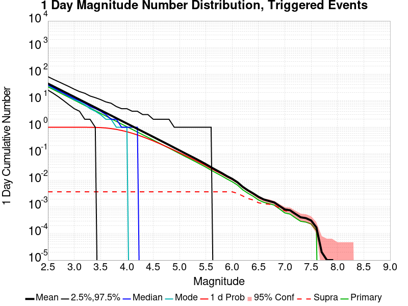
| Mag | Mean | 2.5 %ile | 97.5 %ile | Median | Mode | 1 d Probability | 1 d Supra-Seis Prob | Primary Aftershocks Mean |
|---|---|---|---|---|---|---|---|---|
| M≥2.5 | 44.032 | 25.000 | 80.000 | 39.000 | 38.000 | 1.000 (100.00%) | 3.71E-3 (0.37%) | 33.359 |
| M≥2.6 | 34.979 | 19.000 | 64.000 | 31.000 | 29.000 | 1.000 (100.00%) | 3.71E-3 (0.37%) | 26.500 |
| M≥2.7 | 27.786 | 14.000 | 52.000 | 24.000 | 23.000 | 1.000 (100.00%) | 3.71E-3 (0.37%) | 21.052 |
| M≥2.8 | 22.071 | 10.000 | 42.000 | 19.000 | 19.000 | 1.000 (100.00%) | 3.71E-3 (0.37%) | 16.726 |
| M≥2.9 | 17.520 | 7.000 | 34.000 | 15.000 | 14.000 | 1.000 (100.00%) | 3.71E-3 (0.37%) | 13.279 |
| M≥3 | 13.914 | 5.000 | 27.000 | 12.000 | 11.000 | 1.000 (100.00%) | 3.71E-3 (0.37%) | 10.545 |
| M≥3.1 | 11.049 | 4.000 | 22.000 | 10.000 | 9.000 | 1.000 (99.98%) | 3.71E-3 (0.37%) | 8.373 |
| M≥3.2 | 8.776 | 2.000 | 19.000 | 8.000 | 7.000 | 0.999 (99.91%) | 3.71E-3 (0.37%) | 6.652 |
| M≥3.3 | 6.969 | 2.000 | 15.000 | 6.000 | 5.000 | 0.996 (99.58%) | 3.71E-3 (0.37%) | 5.281 |
| M≥3.4 | 5.537 | 1.000 | 13.000 | 5.000 | 4.000 | 0.988 (98.78%) | 3.71E-3 (0.37%) | 4.197 |
| M≥3.5 | 4.395 | 0.000 | 11.000 | 4.000 | 3.000 | 0.970 (97.01%) | 3.71E-3 (0.37%) | 3.332 |
| M≥3.6 | 3.489 | 0.000 | 9.000 | 3.000 | 2.000 | 0.939 (93.86%) | 3.71E-3 (0.37%) | 2.645 |
| M≥3.7 | 2.769 | 0.000 | 8.000 | 2.000 | 2.000 | 0.892 (89.21%) | 3.71E-3 (0.37%) | 2.099 |
| M≥3.8 | 2.195 | 0.000 | 6.000 | 2.000 | 1.000 | 0.830 (83.02%) | 3.71E-3 (0.37%) | 1.665 |
| M≥3.9 | 1.740 | 0.000 | 5.000 | 1.000 | 1.000 | 0.757 (75.69%) | 3.71E-3 (0.37%) | 1.321 |
| M≥4 | 1.383 | 0.000 | 5.000 | 1.000 | 1.000 | 0.678 (67.75%) | 3.71E-3 (0.37%) | 1.050 |
| M≥4.1 | 1.097 | 0.000 | 4.000 | 1.000 | 0.000 | 0.595 (59.48%) | 3.71E-3 (0.37%) | 0.833 |
| M≥4.2 | 0.870 | 0.000 | 4.000 | 1.000 | 0.000 | 0.513 (51.26%) | 3.71E-3 (0.37%) | 0.661 |
| M≥4.3 | 0.690 | 0.000 | 3.000 | 0.000 | 0.000 | 0.437 (43.74%) | 3.71E-3 (0.37%) | 0.525 |
| M≥4.4 | 0.548 | 0.000 | 3.000 | 0.000 | 0.000 | 0.367 (36.73%) | 3.71E-3 (0.37%) | 0.417 |
| M≥4.5 | 0.435 | 0.000 | 2.000 | 0.000 | 0.000 | 0.306 (30.65%) | 3.71E-3 (0.37%) | 0.331 |
| M≥4.6 | 0.344 | 0.000 | 2.000 | 0.000 | 0.000 | 0.252 (25.22%) | 3.71E-3 (0.37%) | 0.261 |
| M≥4.7 | 0.272 | 0.000 | 2.000 | 0.000 | 0.000 | 0.207 (20.67%) | 3.71E-3 (0.37%) | 0.207 |
| M≥4.8 | 0.216 | 0.000 | 2.000 | 0.000 | 0.000 | 0.168 (16.85%) | 3.71E-3 (0.37%) | 0.164 |
| M≥4.9 | 0.170 | 0.000 | 1.000 | 0.000 | 0.000 | 0.137 (13.67%) | 3.71E-3 (0.37%) | 0.130 |
| M≥5 | 0.134 | 0.000 | 1.000 | 0.000 | 0.000 | 0.110 (10.98%) | 3.71E-3 (0.37%) | 0.102 |
| M≥5.1 | 0.106 | 0.000 | 1.000 | 0.000 | 0.000 | 0.088 (8.82%) | 3.71E-3 (0.37%) | 0.081 |
| M≥5.2 | 0.084 | 0.000 | 1.000 | 0.000 | 0.000 | 0.071 (7.11%) | 3.71E-3 (0.37%) | 0.064 |
| M≥5.3 | 0.067 | 0.000 | 1.000 | 0.000 | 0.000 | 0.057 (5.70%) | 3.71E-3 (0.37%) | 0.051 |
| M≥5.4 | 0.052 | 0.000 | 1.000 | 0.000 | 0.000 | 0.046 (4.55%) | 3.71E-3 (0.37%) | 0.040 |
| M≥5.5 | 0.041 | 0.000 | 1.000 | 0.000 | 0.000 | 0.036 (3.60%) | 3.71E-3 (0.37%) | 0.032 |
| M≥5.6 | 0.031 | 0.000 | 1.000 | 0.000 | 0.000 | 0.028 (2.79%) | 3.71E-3 (0.37%) | 0.024 |
| M≥5.7 | 0.024 | 0.000 | 0.000 | 0.000 | 0.000 | 0.022 (2.19%) | 3.71E-3 (0.37%) | 0.019 |
| M≥5.8 | 0.019 | 0.000 | 0.000 | 0.000 | 0.000 | 0.017 (1.74%) | 3.71E-3 (0.37%) | 0.015 |
| M≥5.9 | 0.015 | 0.000 | 0.000 | 0.000 | 0.000 | 0.013 (1.34%) | 3.71E-3 (0.37%) | 0.011 |
| M≥6 | 0.011 | 0.000 | 0.000 | 0.000 | 0.000 | 0.011 (1.07%) | 3.71E-3 (0.37%) | 8.93E-3 |
| M≥6.1 | 8.52E-3 | 0.000 | 0.000 | 0.000 | 0.000 | 8.09E-3 (0.81%) | 3.26E-3 (0.33%) | 6.69E-3 |
| M≥6.2 | 5.74E-3 | 0.000 | 0.000 | 0.000 | 0.000 | 5.49E-3 (0.55%) | 2.60E-3 (0.26%) | 4.44E-3 |
| M≥6.3 | 4.22E-3 | 0.000 | 0.000 | 0.000 | 0.000 | 4.03E-3 (0.40%) | 2.08E-3 (0.21%) | 3.29E-3 |
| M≥6.4 | 3.23E-3 | 0.000 | 0.000 | 0.000 | 0.000 | 3.07E-3 (0.31%) | 1.83E-3 (0.18%) | 2.52E-3 |
| M≥6.5 | 2.41E-3 | 0.000 | 0.000 | 0.000 | 0.000 | 2.28E-3 (0.23%) | 1.44E-3 (0.14%) | 1.83E-3 |
| M≥6.6 | 1.92E-3 | 0.000 | 0.000 | 0.000 | 0.000 | 1.85E-3 (0.18%) | 1.32E-3 (0.13%) | 1.50E-3 |
| M≥6.7 | 1.68E-3 | 0.000 | 0.000 | 0.000 | 0.000 | 1.63E-3 (0.16%) | 1.27E-3 (0.13%) | 1.34E-3 |
| M≥6.8 | 1.48E-3 | 0.000 | 0.000 | 0.000 | 0.000 | 1.45E-3 (0.14%) | 1.18E-3 (0.12%) | 1.17E-3 |
| M≥6.9 | 1.09E-3 | 0.000 | 0.000 | 0.000 | 0.000 | 1.08E-3 (0.11%) | 9.10E-4 (0.09%) | 8.40E-4 |
| M≥7 | 8.10E-4 | 0.000 | 0.000 | 0.000 | 0.000 | 8.10E-4 (0.08%) | 7.20E-4 (0.07%) | 6.00E-4 |
| M≥7.1 | 7.50E-4 | 0.000 | 0.000 | 0.000 | 0.000 | 7.50E-4 (0.07%) | 6.90E-4 (0.07%) | 5.40E-4 |
| M≥7.2 | 5.50E-4 | 0.000 | 0.000 | 0.000 | 0.000 | 5.50E-4 (0.06%) | 5.30E-4 (0.05%) | 3.90E-4 |
| M≥7.3 | 4.10E-4 | 0.000 | 0.000 | 0.000 | 0.000 | 4.10E-4 (0.04%) | 4.00E-4 (0.04%) | 2.90E-4 |
| M≥7.4 | 3.80E-4 | 0.000 | 0.000 | 0.000 | 0.000 | 3.80E-4 (0.04%) | 3.80E-4 (0.04%) | 2.70E-4 |
| M≥7.5 | 3.10E-4 | 0.000 | 0.000 | 0.000 | 0.000 | 3.10E-4 (0.03%) | 3.10E-4 (0.03%) | 2.30E-4 |
| M≥7.6 | 1.70E-4 | 0.000 | 0.000 | 0.000 | 0.000 | 1.70E-4 (0.02%) | 1.70E-4 (0.02%) | 1.30E-4 |
| M≥7.7 | 2.00E-5 | 0.000 | 0.000 | 0.000 | 0.000 | 2.00E-5 (0.00%) | 2.00E-5 (0.00%) | 0.000 |
| M≥7.8 | 1.00E-5 | 0.000 | 0.000 | 0.000 | 0.000 | 1.00E-5 (0.00%) | 1.00E-5 (0.00%) | 0.000 |
| M≥7.9 | 1.00E-5 | 0.000 | 0.000 | 0.000 | 0.000 | 1.00E-5 (0.00%) | 1.00E-5 (0.00%) | 0.000 |
| M≥8 | 0.000 | 0.000 | 0.000 | 0.000 | 0.000 | 0.000 (0.00%) | 0.000 (0.00%) | 0.000 |
| M≥8.1 | 0.000 | 0.000 | 0.000 | 0.000 | 0.000 | 0.000 (0.00%) | 0.000 (0.00%) | 0.000 |
| M≥8.2 | 0.000 | 0.000 | 0.000 | 0.000 | 0.000 | 0.000 (0.00%) | 0.000 (0.00%) | 0.000 |
| M≥8.3 | 0.000 | 0.000 | 0.000 | 0.000 | 0.000 | 0.000 (0.00%) | 0.000 (0.00%) | 0.000 |
| M≥8.4 | 0.000 | 0.000 | 0.000 | 0.000 | 0.000 | 0.000 (0.00%) | 0.000 (0.00%) | 0.000 |
| M≥8.5 | 0.000 | 0.000 | 0.000 | 0.000 | 0.000 | 0.000 (0.00%) | 0.000 (0.00%) | 0.000 |
| M≥8.6 | 0.000 | 0.000 | 0.000 | 0.000 | 0.000 | 0.000 (0.00%) | 0.000 (0.00%) | 0.000 |
| M≥8.7 | 0.000 | 0.000 | 0.000 | 0.000 | 0.000 | 0.000 (0.00%) | 0.000 (0.00%) | 0.000 |
| M≥8.8 | 0.000 | 0.000 | 0.000 | 0.000 | 0.000 | 0.000 (0.00%) | 0.000 (0.00%) | 0.000 |
| M≥8.9 | 0.000 | 0.000 | 0.000 | 0.000 | 0.000 | 0.000 (0.00%) | 0.000 (0.00%) | 0.000 |
| M≥9 | 0.000 | 0.000 | 0.000 | 0.000 | 0.000 | 0.000 (0.00%) | 0.000 (0.00%) | 0.000 |
Legend
| Mag | Mean | 2.5 %ile | 97.5 %ile | Median | Mode | 1 hr Probability | 1 hr Supra-Seis Prob | Primary Aftershocks Mean |
|---|---|---|---|---|---|---|---|---|
| M≥2.5 | 1.688 | 0.000 | 5.000 | 1.000 | 1.000 | 0.789 (78.92%) | 1.40E-4 (0.01%) | 1.558 |
| M≥2.6 | 1.341 | 0.000 | 4.000 | 1.000 | 1.000 | 0.711 (71.14%) | 1.40E-4 (0.01%) | 1.238 |
| M≥2.7 | 1.067 | 0.000 | 4.000 | 1.000 | 0.000 | 0.628 (62.85%) | 1.40E-4 (0.01%) | 0.985 |
| M≥2.8 | 0.845 | 0.000 | 3.000 | 1.000 | 0.000 | 0.543 (54.33%) | 1.40E-4 (0.01%) | 0.780 |
| M≥2.9 | 0.671 | 0.000 | 3.000 | 0.000 | 0.000 | 0.463 (46.27%) | 1.40E-4 (0.01%) | 0.619 |
| M≥3 | 0.534 | 0.000 | 2.000 | 0.000 | 0.000 | 0.391 (39.08%) | 1.40E-4 (0.01%) | 0.492 |
| M≥3.1 | 0.423 | 0.000 | 2.000 | 0.000 | 0.000 | 0.326 (32.56%) | 1.40E-4 (0.01%) | 0.390 |
| M≥3.2 | 0.337 | 0.000 | 2.000 | 0.000 | 0.000 | 0.270 (27.00%) | 1.40E-4 (0.01%) | 0.311 |
| M≥3.3 | 0.267 | 0.000 | 2.000 | 0.000 | 0.000 | 0.221 (22.06%) | 1.40E-4 (0.01%) | 0.246 |
| M≥3.4 | 0.211 | 0.000 | 1.000 | 0.000 | 0.000 | 0.180 (17.97%) | 1.40E-4 (0.01%) | 0.194 |
| M≥3.5 | 0.167 | 0.000 | 1.000 | 0.000 | 0.000 | 0.145 (14.51%) | 1.40E-4 (0.01%) | 0.154 |
| M≥3.6 | 0.132 | 0.000 | 1.000 | 0.000 | 0.000 | 0.117 (11.74%) | 1.40E-4 (0.01%) | 0.122 |
| M≥3.7 | 0.104 | 0.000 | 1.000 | 0.000 | 0.000 | 0.094 (9.39%) | 1.40E-4 (0.01%) | 0.096 |
| M≥3.8 | 0.082 | 0.000 | 1.000 | 0.000 | 0.000 | 0.075 (7.51%) | 1.40E-4 (0.01%) | 0.076 |
| M≥3.9 | 0.065 | 0.000 | 1.000 | 0.000 | 0.000 | 0.060 (5.96%) | 1.40E-4 (0.01%) | 0.060 |
| M≥4 | 0.051 | 0.000 | 1.000 | 0.000 | 0.000 | 0.047 (4.73%) | 1.40E-4 (0.01%) | 0.047 |
| M≥4.1 | 0.041 | 0.000 | 1.000 | 0.000 | 0.000 | 0.038 (3.82%) | 1.40E-4 (0.01%) | 0.038 |
| M≥4.2 | 0.033 | 0.000 | 1.000 | 0.000 | 0.000 | 0.031 (3.11%) | 1.40E-4 (0.01%) | 0.031 |
| M≥4.3 | 0.026 | 0.000 | 0.000 | 0.000 | 0.000 | 0.025 (2.47%) | 1.40E-4 (0.01%) | 0.024 |
| M≥4.4 | 0.020 | 0.000 | 0.000 | 0.000 | 0.000 | 0.020 (1.96%) | 1.40E-4 (0.01%) | 0.019 |
| M≥4.5 | 0.016 | 0.000 | 0.000 | 0.000 | 0.000 | 0.016 (1.56%) | 1.40E-4 (0.01%) | 0.015 |
| M≥4.6 | 0.013 | 0.000 | 0.000 | 0.000 | 0.000 | 0.012 (1.25%) | 1.40E-4 (0.01%) | 0.012 |
| M≥4.7 | 0.010 | 0.000 | 0.000 | 0.000 | 0.000 | 9.82E-3 (0.98%) | 1.40E-4 (0.01%) | 9.45E-3 |
| M≥4.8 | 8.06E-3 | 0.000 | 0.000 | 0.000 | 0.000 | 7.80E-3 (0.78%) | 1.40E-4 (0.01%) | 7.49E-3 |
| M≥4.9 | 6.50E-3 | 0.000 | 0.000 | 0.000 | 0.000 | 6.31E-3 (0.63%) | 1.40E-4 (0.01%) | 6.05E-3 |
| M≥5 | 5.08E-3 | 0.000 | 0.000 | 0.000 | 0.000 | 4.92E-3 (0.49%) | 1.40E-4 (0.01%) | 4.77E-3 |
| M≥5.1 | 4.00E-3 | 0.000 | 0.000 | 0.000 | 0.000 | 3.86E-3 (0.39%) | 1.40E-4 (0.01%) | 3.74E-3 |
| M≥5.2 | 3.21E-3 | 0.000 | 0.000 | 0.000 | 0.000 | 3.09E-3 (0.31%) | 1.40E-4 (0.01%) | 3.03E-3 |
| M≥5.3 | 2.62E-3 | 0.000 | 0.000 | 0.000 | 0.000 | 2.54E-3 (0.25%) | 1.40E-4 (0.01%) | 2.49E-3 |
| M≥5.4 | 2.02E-3 | 0.000 | 0.000 | 0.000 | 0.000 | 1.97E-3 (0.20%) | 1.40E-4 (0.01%) | 1.92E-3 |
| M≥5.5 | 1.57E-3 | 0.000 | 0.000 | 0.000 | 0.000 | 1.52E-3 (0.15%) | 1.40E-4 (0.01%) | 1.47E-3 |
| M≥5.6 | 1.13E-3 | 0.000 | 0.000 | 0.000 | 0.000 | 1.10E-3 (0.11%) | 1.40E-4 (0.01%) | 1.06E-3 |
| M≥5.7 | 9.00E-4 | 0.000 | 0.000 | 0.000 | 0.000 | 8.90E-4 (0.09%) | 1.40E-4 (0.01%) | 8.50E-4 |
| M≥5.8 | 6.80E-4 | 0.000 | 0.000 | 0.000 | 0.000 | 6.80E-4 (0.07%) | 1.40E-4 (0.01%) | 6.40E-4 |
| M≥5.9 | 5.30E-4 | 0.000 | 0.000 | 0.000 | 0.000 | 5.30E-4 (0.05%) | 1.40E-4 (0.01%) | 5.00E-4 |
| M≥6 | 3.70E-4 | 0.000 | 0.000 | 0.000 | 0.000 | 3.70E-4 (0.04%) | 1.40E-4 (0.01%) | 3.60E-4 |
| M≥6.1 | 2.50E-4 | 0.000 | 0.000 | 0.000 | 0.000 | 2.50E-4 (0.03%) | 1.00E-4 (0.01%) | 2.40E-4 |
| M≥6.2 | 1.60E-4 | 0.000 | 0.000 | 0.000 | 0.000 | 1.60E-4 (0.02%) | 8.00E-5 (0.01%) | 1.50E-4 |
| M≥6.3 | 1.10E-4 | 0.000 | 0.000 | 0.000 | 0.000 | 1.10E-4 (0.01%) | 6.00E-5 (0.01%) | 1.00E-4 |
| M≥6.4 | 8.00E-5 | 0.000 | 0.000 | 0.000 | 0.000 | 8.00E-5 (0.01%) | 6.00E-5 (0.01%) | 8.00E-5 |
| M≥6.5 | 8.00E-5 | 0.000 | 0.000 | 0.000 | 0.000 | 8.00E-5 (0.01%) | 6.00E-5 (0.01%) | 8.00E-5 |
| M≥6.6 | 7.00E-5 | 0.000 | 0.000 | 0.000 | 0.000 | 7.00E-5 (0.01%) | 5.00E-5 (0.01%) | 7.00E-5 |
| M≥6.7 | 7.00E-5 | 0.000 | 0.000 | 0.000 | 0.000 | 7.00E-5 (0.01%) | 5.00E-5 (0.01%) | 7.00E-5 |
| M≥6.8 | 6.00E-5 | 0.000 | 0.000 | 0.000 | 0.000 | 6.00E-5 (0.01%) | 4.00E-5 (0.00%) | 6.00E-5 |
| M≥6.9 | 4.00E-5 | 0.000 | 0.000 | 0.000 | 0.000 | 4.00E-5 (0.00%) | 2.00E-5 (0.00%) | 4.00E-5 |
| M≥7 | 2.00E-5 | 0.000 | 0.000 | 0.000 | 0.000 | 2.00E-5 (0.00%) | 1.00E-5 (0.00%) | 2.00E-5 |
| M≥7.1 | 1.00E-5 | 0.000 | 0.000 | 0.000 | 0.000 | 1.00E-5 (0.00%) | 1.00E-5 (0.00%) | 1.00E-5 |
| M≥7.2 | 0.000 | 0.000 | 0.000 | 0.000 | 0.000 | 0.000 (0.00%) | 0.000 (0.00%) | 0.000 |
| M≥7.3 | 0.000 | 0.000 | 0.000 | 0.000 | 0.000 | 0.000 (0.00%) | 0.000 (0.00%) | 0.000 |
| M≥7.4 | 0.000 | 0.000 | 0.000 | 0.000 | 0.000 | 0.000 (0.00%) | 0.000 (0.00%) | 0.000 |
| M≥7.5 | 0.000 | 0.000 | 0.000 | 0.000 | 0.000 | 0.000 (0.00%) | 0.000 (0.00%) | 0.000 |
| M≥7.6 | 0.000 | 0.000 | 0.000 | 0.000 | 0.000 | 0.000 (0.00%) | 0.000 (0.00%) | 0.000 |
| M≥7.7 | 0.000 | 0.000 | 0.000 | 0.000 | 0.000 | 0.000 (0.00%) | 0.000 (0.00%) | 0.000 |
| M≥7.8 | 0.000 | 0.000 | 0.000 | 0.000 | 0.000 | 0.000 (0.00%) | 0.000 (0.00%) | 0.000 |
| M≥7.9 | 0.000 | 0.000 | 0.000 | 0.000 | 0.000 | 0.000 (0.00%) | 0.000 (0.00%) | 0.000 |
| M≥8 | 0.000 | 0.000 | 0.000 | 0.000 | 0.000 | 0.000 (0.00%) | 0.000 (0.00%) | 0.000 |
| M≥8.1 | 0.000 | 0.000 | 0.000 | 0.000 | 0.000 | 0.000 (0.00%) | 0.000 (0.00%) | 0.000 |
| M≥8.2 | 0.000 | 0.000 | 0.000 | 0.000 | 0.000 | 0.000 (0.00%) | 0.000 (0.00%) | 0.000 |
| M≥8.3 | 0.000 | 0.000 | 0.000 | 0.000 | 0.000 | 0.000 (0.00%) | 0.000 (0.00%) | 0.000 |
| M≥8.4 | 0.000 | 0.000 | 0.000 | 0.000 | 0.000 | 0.000 (0.00%) | 0.000 (0.00%) | 0.000 |
| M≥8.5 | 0.000 | 0.000 | 0.000 | 0.000 | 0.000 | 0.000 (0.00%) | 0.000 (0.00%) | 0.000 |
| M≥8.6 | 0.000 | 0.000 | 0.000 | 0.000 | 0.000 | 0.000 (0.00%) | 0.000 (0.00%) | 0.000 |
| M≥8.7 | 0.000 | 0.000 | 0.000 | 0.000 | 0.000 | 0.000 (0.00%) | 0.000 (0.00%) | 0.000 |
| M≥8.8 | 0.000 | 0.000 | 0.000 | 0.000 | 0.000 | 0.000 (0.00%) | 0.000 (0.00%) | 0.000 |
| M≥8.9 | 0.000 | 0.000 | 0.000 | 0.000 | 0.000 | 0.000 (0.00%) | 0.000 (0.00%) | 0.000 |
| M≥9 | 0.000 | 0.000 | 0.000 | 0.000 | 0.000 | 0.000 (0.00%) | 0.000 (0.00%) | 0.000 |
These plots show how the probability of ruptures of various magnitudes within 100km of any scenario rupture changes over time
| Forecast Duration | UCERF3-ETAS [95% Conf] | UCERF3-ETAS Triggered Only | UCERF3-TD | UCERF3-ETAS/TD Gain | UCERF3-TI |
|---|---|---|---|---|---|
| 1 Hour | 4.97E-3 [4.55E-3 - 5.42E-3] | 4.88E-3 | 8.84E-5 | 56.22 | 8.77E-5 |
| 1 Day | 0.111 [0.109 - 0.113] | 0.109 | 2.12E-3 | 52.45 | 2.10E-3 |
| 1 Week | 0.463 [0.460 - 0.466] | 0.455 | 0.015 | 31.4 | 0.015 |
| 1 Month | 0.778 [0.775 - 0.780] | 0.763 | 0.062 | 12.61 | 0.061 |
| 1 Year | 0.984 [0.984 - 0.985] | 0.966 | 0.539 | 1.83 | 0.537 |
| 10 Years | 1.000 [1.000 - 1.000] | 0.995 | 1.000 | 1 | 1.000 |
| 30 Years | 1.000 [1.000 - 1.000] * | * | 1.000 | 1 * | 1.000 |
| 100 Years | 1.000 [1.000 - 1.000] * | * | 1.000 | 1 * | 1.000 |
* forecast duration is longer than simulation length, only ETAS ruptures from the first 10 years are included

| Forecast Duration | UCERF3-ETAS [95% Conf] | UCERF3-ETAS Triggered Only | UCERF3-TD | UCERF3-ETAS/TD Gain | UCERF3-TI |
|---|---|---|---|---|---|
| 1 Hour | 3.81E-4 [2.75E-4 - 5.26E-4] | 3.70E-4 | 1.05E-5 | 36.08 | 9.92E-6 |
| 1 Day | 0.011 [0.010 - 0.012] | 0.011 | 2.53E-4 | 43.11 | 2.38E-4 |
| 1 Week | 0.055 [0.054 - 0.056] | 0.053 | 1.77E-3 | 31.04 | 1.67E-3 |
| 1 Month | 0.131 [0.129 - 0.133] | 0.125 | 7.56E-3 | 17.36 | 7.12E-3 |
| 1 Year | 0.341 [0.338 - 0.343] | 0.277 | 0.088 | 3.86 | 0.083 |
| 10 Years | 0.764 [0.762 - 0.765] | 0.404 | 0.603 | 1.27 | 0.581 |
| 30 Years | 0.963 [0.963 - 0.963] * | * | 0.937 | 1.03 * | 0.926 |
| 100 Years | 1.000 [1.000 - 1.000] * | * | 1.000 | 1 * | 1.000 |
* forecast duration is longer than simulation length, only ETAS ruptures from the first 10 years are included

| Forecast Duration | UCERF3-ETAS [95% Conf] | UCERF3-ETAS Triggered Only | UCERF3-TD | UCERF3-ETAS/TD Gain | UCERF3-TI |
|---|---|---|---|---|---|
| 1 Hour | 2.20E-5 [5.42E-6 - 8.26E-5] | 2.00E-5 | 1.95E-6 | 11.24 | 1.78E-6 |
| 1 Day | 8.57E-4 [6.94E-4 - 1.06E-3] | 8.10E-4 | 4.69E-5 | 18.29 | 4.28E-5 |
| 1 Week | 5.00E-3 [4.59E-3 - 5.44E-3] | 4.67E-3 | 3.28E-4 | 15.23 | 3.00E-4 |
| 1 Month | 0.013 [0.012 - 0.013] | 0.011 | 1.40E-3 | 9.08 | 1.28E-3 |
| 1 Year | 0.044 [0.043 - 0.045] | 0.028 | 0.017 | 2.6 | 0.016 |
| 10 Years | 0.195 [0.194 - 0.196] | 0.044 | 0.158 | 1.23 | 0.145 |
| 30 Years | 0.432 [0.431 - 0.432] * | * | 0.405 | 1.06 * | 0.375 |
| 100 Years | 0.801 [0.801 - 0.801] * | * | 0.792 | 1.01 * | 0.791 |
* forecast duration is longer than simulation length, only ETAS ruptures from the first 10 years are included
| Forecast Duration | UCERF3-ETAS [95% Conf] | UCERF3-ETAS Triggered Only | UCERF3-TD | UCERF3-ETAS/TD Gain | UCERF3-TI |
|---|---|---|---|---|---|
| 1 Hour | 3.22E-7 [3.22E-7 - 4.82E-5] | 0.000 | 3.22E-7 | 1 | 2.73E-7 |
| 1 Day | 7.74E-6 [7.74E-6 - 5.56E-5] | 0.000 | 7.74E-6 | 1 | 6.54E-6 |
| 1 Week | 6.42E-5 [5.47E-5 - 1.19E-4] | 1.00E-5 | 5.42E-5 | 1.18 | 4.58E-5 |
| 1 Month | 2.72E-4 [2.45E-4 - 3.42E-4] | 4.00E-5 | 2.32E-4 | 1.17 | 1.96E-4 |
| 1 Year | 2.94E-3 [2.89E-3 - 3.04E-3] | 1.20E-4 | 2.82E-3 | 1.04 | 2.39E-3 |
| 10 Years | 0.029 [0.029 - 0.029] | 2.50E-4 | 0.029 | 1.01 | 0.024 |
| 30 Years | 0.091 [0.091 - 0.091] * | * | 0.091 | 1 * | 0.069 |
| 100 Years | 0.277 [0.277 - 0.277] * | * | 0.276 | 1 * | 0.213 |
* forecast duration is longer than simulation length, only ETAS ruptures from the first 10 years are included


| Section Name | Strike, Dip, Rake | # Hypos In Poly | Max Mag w/ Hypo In Poly | # Surfs In Poly | Max Mag w/ Surf In Poly | Min Dist To Any (km) | Min Poly Dist To Any (km) | Min Dist To Largest (km) | Min Poly Dist To Largest (km) | Min Hypo Dist To Largest (km) | Min Hypo Poly Dist To Largest (km) |
|---|---|---|---|---|---|---|---|---|---|---|---|
| Airport Lake | 359, 50, -90 | 776 | 7.1 | 776 | 7.1 | 0.145 | 0.000 | 0.223 | 0.000 | 5.612 | 0.000 |
| Little Lake | 327, 90, 180 | 270 | 5.5 | 271 | 7.1 | 1.937 | 0.000 | 9.788 | 0.000 | 13.471 | 1.469 |
| Garlock (Central) | 71, 90, 0 | 95 | 4.49 | 96 | 7.1 | 0.225 | 0.000 | 5.697 | 0.000 | 31.947 | 19.940 |
| So Sierra Nevada | 2, 50, -90 | 61 | 4.52 | 61 | 4.52 | 1.134 | 0.000 | 2.504 | 1.926 | 16.191 | 15.188 |
| Ash Hill | 162, 90, 180 | 15 | 3.57 | 15 | 3.57 | 0.563 | 0.000 | 35.296 | 24.239 | 36.003 | 25.242 |
| Panamint Valley | 334, 90, -150 | 14 | 3.57 | 14 | 3.57 | 6.408 | 0.000 | 30.387 | 18.415 | 40.236 | 28.550 |
| Tank Canyon | 189, 50, -90 | 1 | 3.0 | 1 | 3.0 | 1.252 | 0.000 | 9.884 | 9.195 | 23.737 | 23.674 |
| Blackwater | 323, 90, 180 | 1 | 3.54 | 1 | 3.54 | 5.396 | 0.000 | 13.591 | 9.547 | 39.380 | 38.300 |
| Sierra Nevada (No Extension) | 344, 50, -90 | 0 | 0 | 5.696 | 3.696 | 37.968 | 37.565 | 58.680 | 58.391 | ||
| Owens Valley | 346, 90, 180 | 0 | 0 | 13.567 | 12.581 | 46.826 | 46.453 | 68.299 | 66.819 | ||
| Scodie Lineament | 221, 68, 0 | 0 | 0 | 16.722 | 15.781 | 27.685 | 26.537 | 36.559 | 32.668 | ||
| Lenwood-Lockhart-Old Woman Springs | 301, 90, 180 | 0 | 0 | 18.692 | 16.534 | 52.126 | 40.302 | 63.646 | 53.437 | ||
| Garlock (West) | 56, 90, 0 | 0 | 0 | 19.042 | 18.949 | 64.104 | 62.040 | 66.727 | 62.627 |
These are map plots of individual catalogs from the simulations, selected as the closest catalog to each of the given percentiles in terms of total number of events.
| Duration | p0.0 %-ile | p25.0 %-ile | p50.0 %-ile | p75.0 %-ile | p90.0 %-ile | p95.0 %-ile | p97.5 %-ile | p98.0 %-ile | p99.0 %-ile | p99.5 %-ile | p99.9 %-ile | p100.0 %-ile |
|---|---|---|---|---|---|---|---|---|---|---|---|---|
| 1 Week |  |  |  |  |  | |||||||
| 1 Month |  |  |  |  |  |  |  |  | ||||
| 1 Year |  |  |  |  |  |  | ||||||
| 10 Year |  |  |  |  |  |
These plots compare simulated sequences with data from ComCat. All plots only consider events with hypocenters inside the ComCat region defined in the JSON input file.
Last updated at 2019/11/30 11:33:42 UTC, 20 weeks after the simulation start time.
Total matching ComCat events found: 592
| Incremental MND | Cumulative MND |
|---|---|
 | 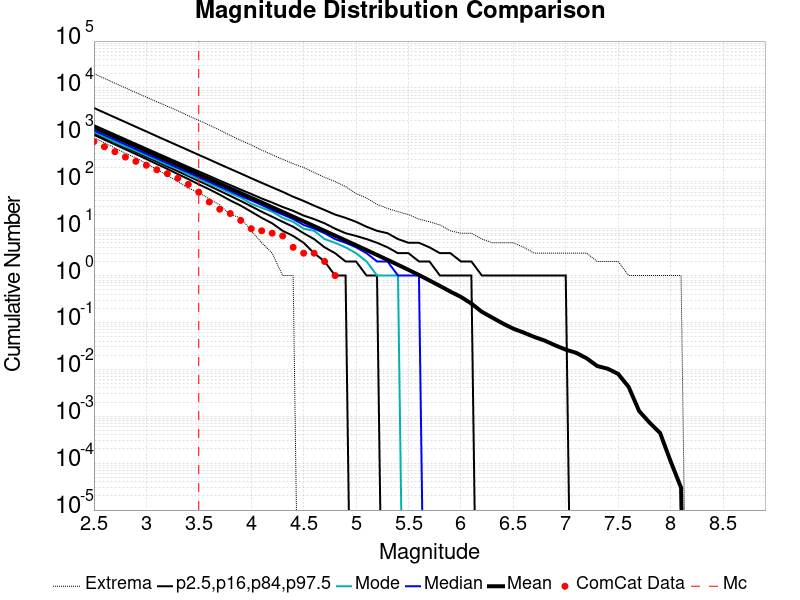 |
The following plots compare simulation results with ComCat data above a magnitude threshold. Plots labeled as M≥Mc(t) use the time-dependent magnitude of completeness (Mc) defined in Helmstetter et al. (2006), which is plotted below. In the case of multiple M≥5 ruptures, either as input to the simulation or in the comparison data, the maximum calculated time-dependent Mc is used. This time-dependent Mc function is plotted below.
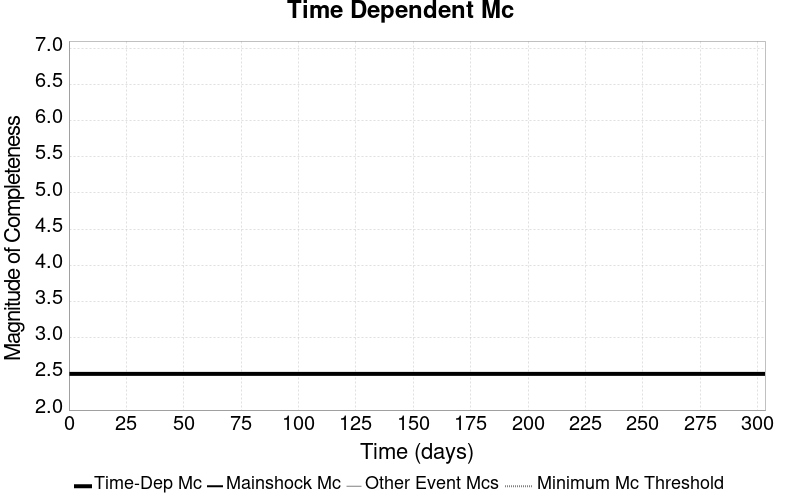
| M≥Mc(t) | M≥3.5 | M≥4 | M≥5 | M≥6 | M≥7 |
|---|---|---|---|---|---|
| 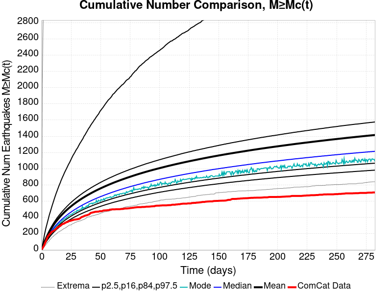 | 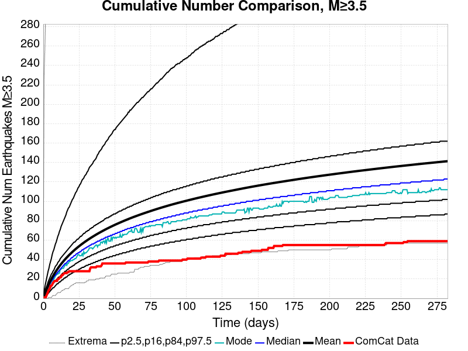 | 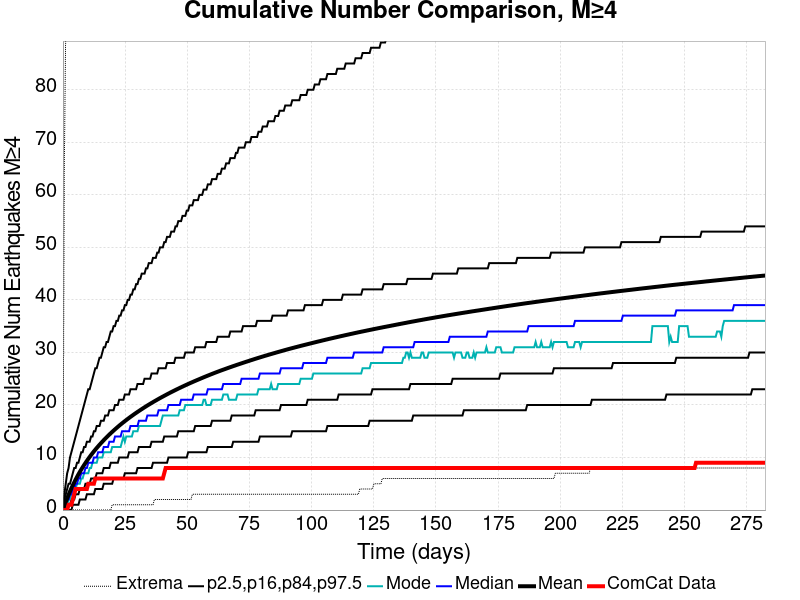 |  | 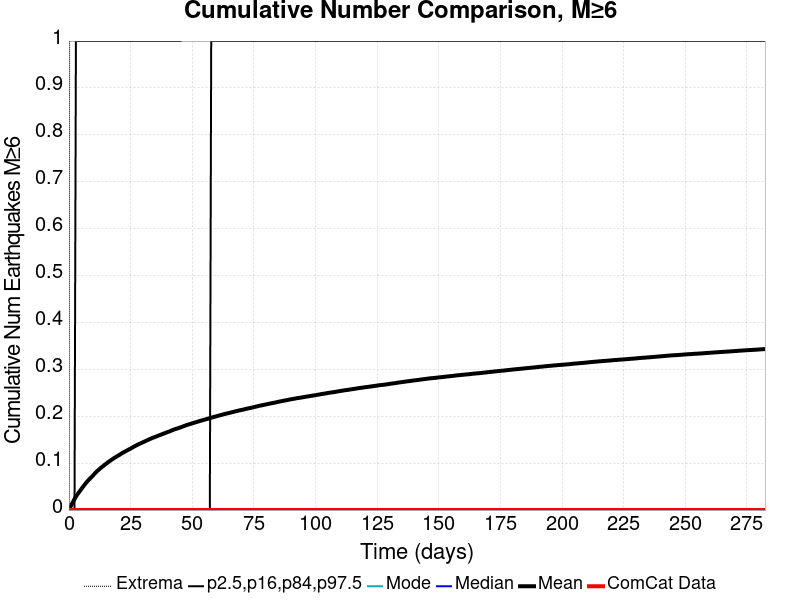 |
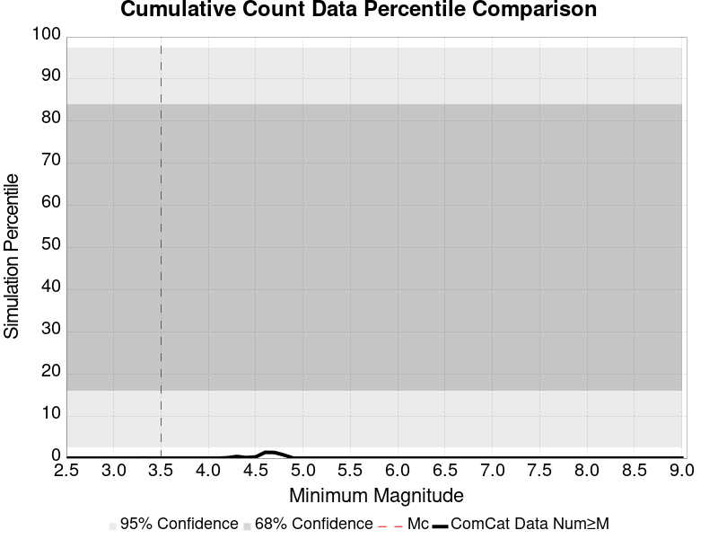
Note: maps labeled 'Forecast' are for a duration that extends into the future, only forecasted values are plotted (ComCat data omitted)
| 1 Day | 1 Week | 1 Month | Current (20 Week) | Forecast: 1 Year | |
|---|---|---|---|---|---|
| M≥Mc(t) |  |  |  | ||
| Prob: 100.00%, Actual: 27 | Prob: 100.00%, Actual: 196 | Prob: 100.00%, Actual: 375 | Prob: 100.00%, Actual: 592 | Prob: 100.00% | |
| M≥3.5 |  |  | |||
| Prob: 96.86%, Actual: 1 | Prob: 100.00%, Actual: 17 | Prob: 100.00%, Actual: 29 | Prob: 100.00%, Actual: 49 | Prob: 100.00% | |
| M≥4 |  |  |  |  | |
| Prob: 67.20%, Actual: 0 | Prob: 99.64%, Actual: 4 | Prob: 100.00%, Actual: 6 | Prob: 100.00%, Actual: 8 | Prob: 100.00% | |
| M≥5 |  |  | |||
| Prob: 10.81%, Actual: 0 | Prob: 45.07%, Actual: 0 | Prob: 75.87%, Actual: 0 | Prob: 92.50%, Actual: 1 | Prob: 96.45% | |
| M≥6 | 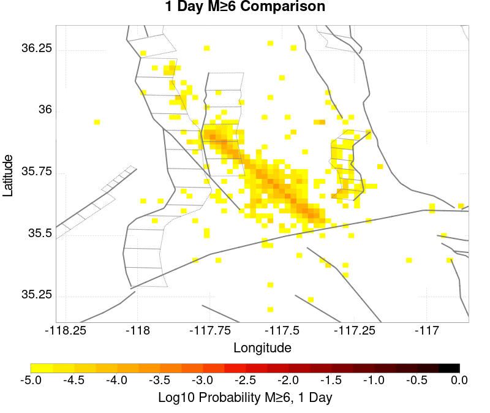 |  | |||
| Prob: 1.05%, Actual: 0 | Prob: 5.22%, Actual: 0 | Prob: 12.20%, Actual: 0 | Prob: 21.40%, Actual: 0 | Prob: 27.10% | |
| M≥7 |  |  | |||
| Prob: 0.08%, Actual: 0 | Prob: 0.45%, Actual: 0 | Prob: 1.11%, Actual: 0 | Prob: 2.08%, Actual: 0 | Prob: 2.68% | |
| M≥8 |  | 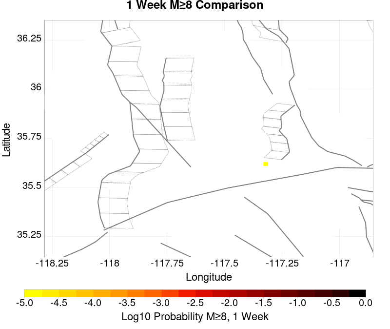 |  |  |  |
| Prob: 0.00%, Actual: 0 | Prob: 0.00%, Actual: 0 | Prob: 0.00%, Actual: 0 | Prob: 0.01%, Actual: 0 | Prob: 0.01% |
Note: maps labeled 'Forecast' are for a duration that extends into the future, only forecasted values are plotted (ComCat data omitted)
| 1 Day | 1 Week | 1 Month | Current (20 Week) | Forecast: 1 Year | |
|---|---|---|---|---|---|
| M≥Mc(t) |  |  | |||
| Mean: 42.483, Actual: 27 | Mean: 235.426, Actual: 196 | Mean: 592.593, Actual: 375 | Mean: 1136.697, Actual: 592 | Mean: 1520.105 | |
| M≥3.5 | 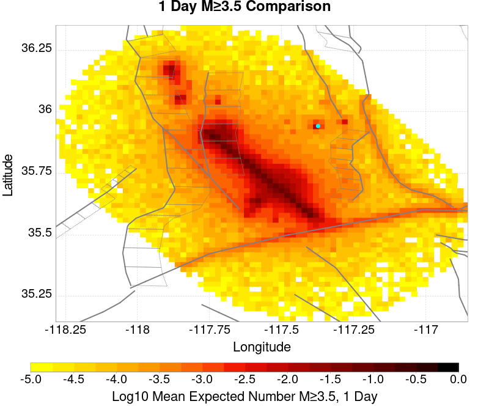 |  |  |  | |
| Mean: 4.241, Actual: 1 | Mean: 23.514, Actual: 17 | Mean: 59.175, Actual: 29 | Mean: 113.532, Actual: 49 | Mean: 151.850 | |
| M≥4 |  | ||||
| Mean: 1.334, Actual: 0 | Mean: 7.424, Actual: 4 | Mean: 18.675, Actual: 6 | Mean: 35.847, Actual: 8 | Mean: 47.938 | |
| M≥5 |  | 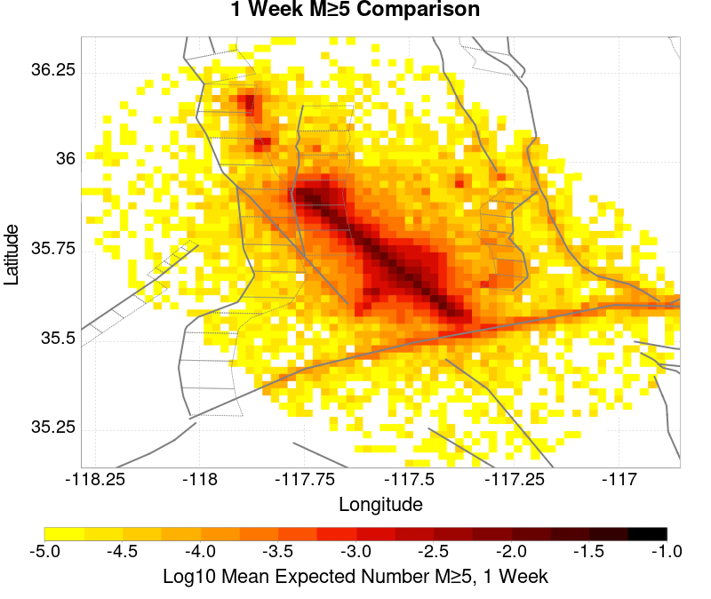 |  | 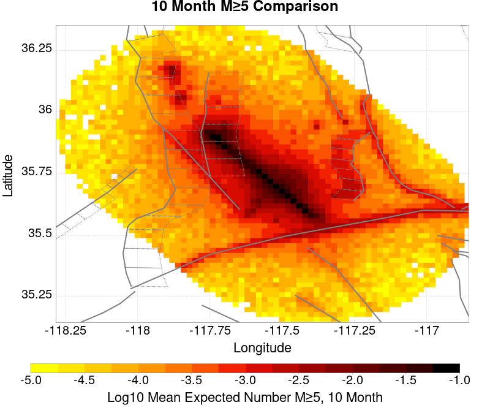 | |
| Mean: 0.129, Actual: 0 | Mean: 0.724, Actual: 0 | Mean: 1.815, Actual: 0 | Mean: 3.489, Actual: 1 | Mean: 4.670 | |
| M≥6 |  |  | 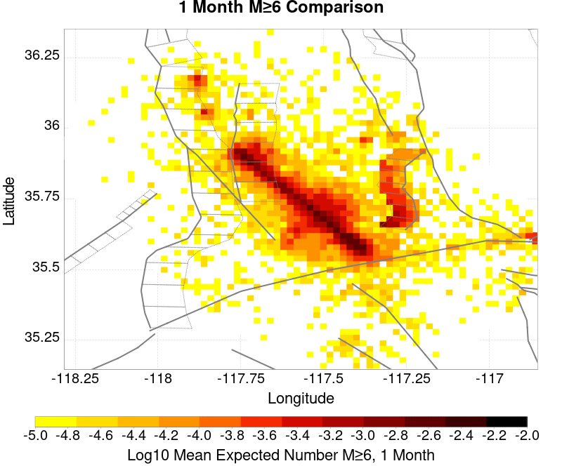 | 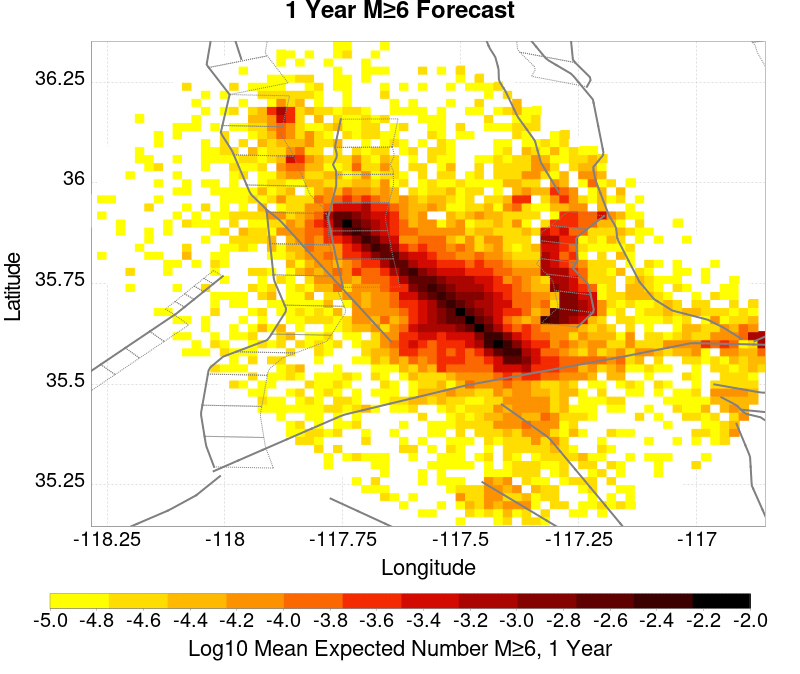 | |
| Mean: 0.011, Actual: 0 | Mean: 0.058, Actual: 0 | Mean: 0.145, Actual: 0 | Mean: 0.277, Actual: 0 | Mean: 0.369 | |
| M≥7 |  |  | 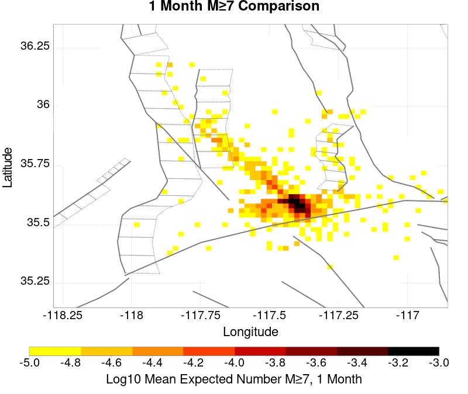 |  |  |
| Mean: 8.00E-4, Actual: 0 | Mean: 4.53E-3, Actual: 0 | Mean: 0.011, Actual: 0 | Mean: 0.021, Actual: 0 | Mean: 0.028 | |
| M≥8 |  |  |  |  |  |
| Mean: 0.000, Actual: 0 | Mean: 1.00E-5, Actual: 0 | Mean: 4.00E-5, Actual: 0 | Mean: 9.00E-5, Actual: 0 | Mean: 1.10E-4 |
| M≥Mc(t) | M≥3.5 | M≥4 | M≥5 | M≥6 | M≥7 | M≥8 |
|---|---|---|---|---|---|---|
 |  | 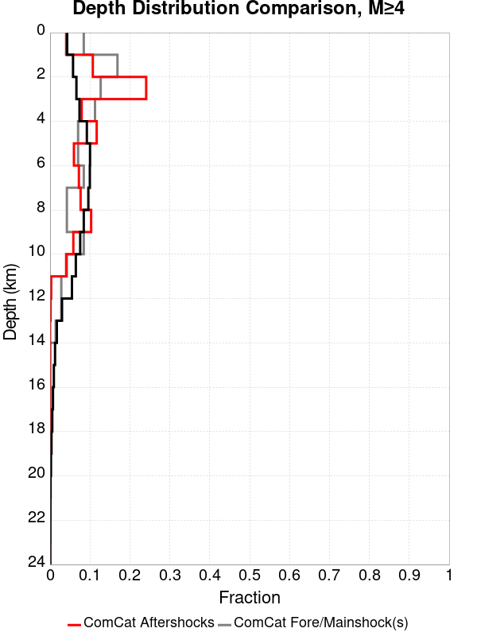 | 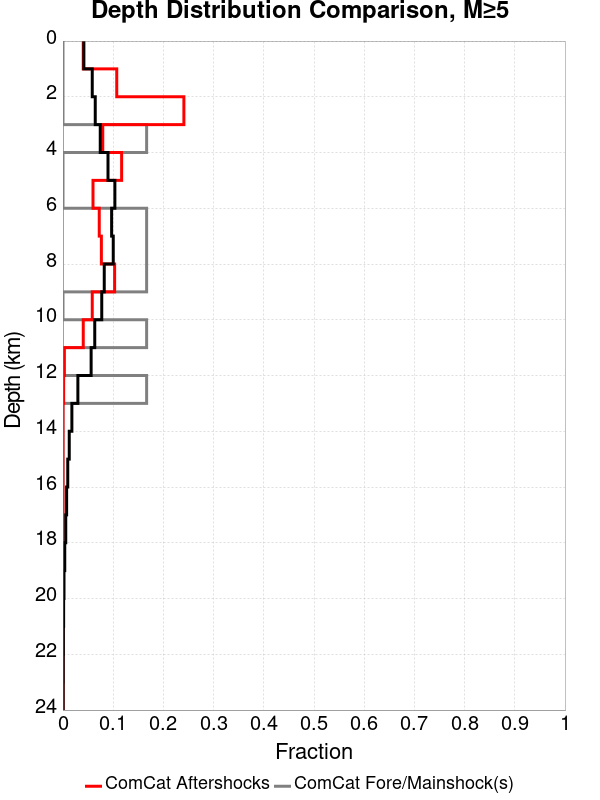 |  |  | 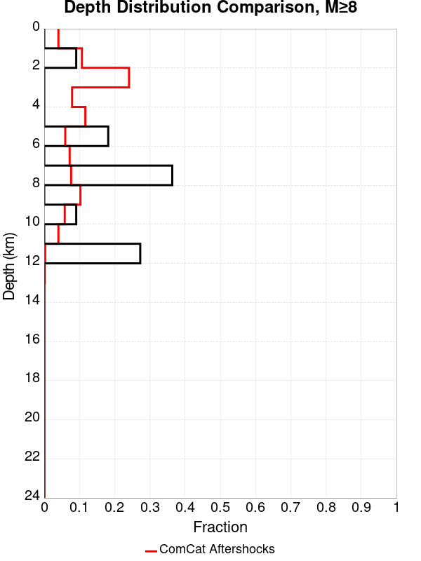 |
| Min Mag | 1 yr Triggered Ruptures (no spontaneous) | 10 yr Triggered Ruptures (no spontaneous) | 10 yr Triggered Ruptures (primary aftershocks only) |
|---|---|---|---|
| All Supra. Seis. | 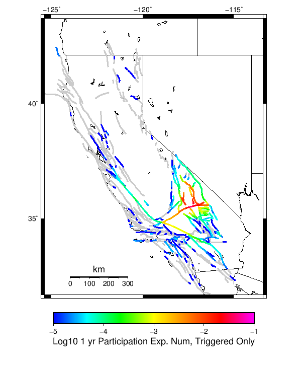 |  | |
| M≥6.5 |  |  | 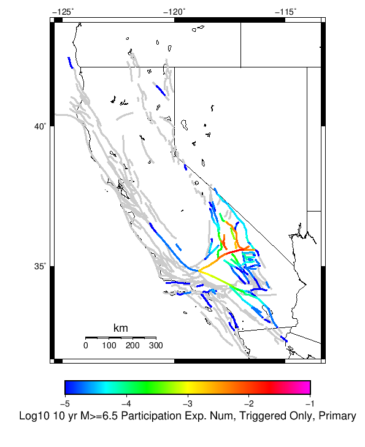 |
| M≥7 | 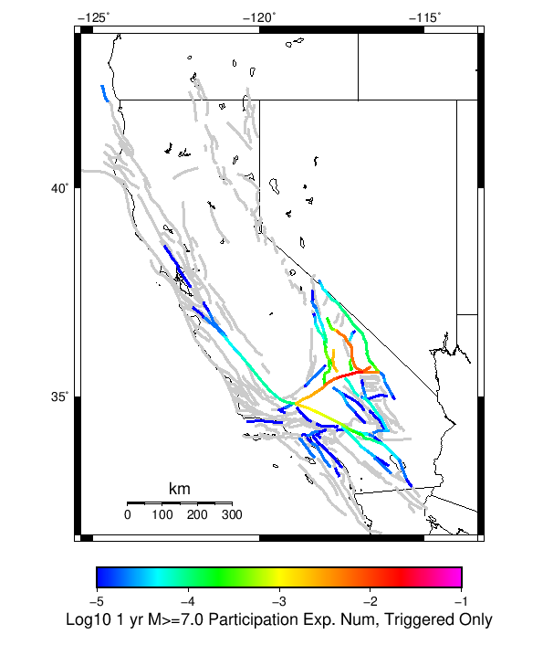 |  | |
| M≥7.5 |  |  |  |
| M≥8 |  |  | 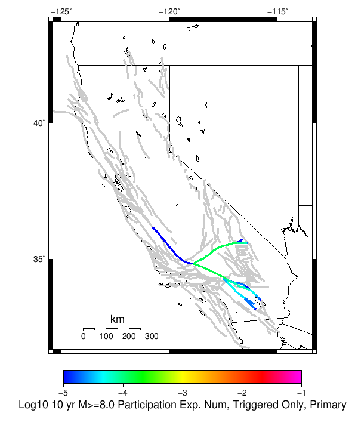 |
First 10 of 186 with matching ruptures shown
| Parent Name | Triggered 10 Year Mean Count | Triggered 1 Day Prob | Triggered 1 Week Prob | Triggered 1 Month Prob | Triggered 1 Year Prob | Triggered 10 Year Prob | Triggered 10 Year Primary Mean Count |
|---|---|---|---|---|---|---|---|
| Garlock (Central) | 0.08623 | 0.00168 | 0.00956 | 0.02248 | 0.05311 | 0.08317 | 0.04881 |
| Tank Canyon | 0.06951 | 7.6E-4 | 0.00425 | 0.01216 | 0.03359 | 0.05957 | 0.01774 |
| Little Lake | 0.03538 | 7.7E-4 | 0.00378 | 0.00899 | 0.02196 | 0.03456 | 0.02096 |
| Owl Lake | 0.02748 | 3.5E-4 | 0.00227 | 0.00559 | 0.01436 | 0.02401 | 0.00742 |
| Airport Lake | 0.02257 | 4.6E-4 | 0.00256 | 0.00585 | 0.01441 | 0.02246 | 0.01473 |
| Panamint Valley | 0.02052 | 3.1E-4 | 0.00165 | 0.00431 | 0.0115 | 0.01994 | 0.00724 |
| Garlock (East) | 0.01808 | 2.1E-4 | 0.00154 | 0.00354 | 0.00935 | 0.01603 | 0.00474 |
| Hunter Mountain-Saline Valley | 0.00927 | 2.0E-4 | 7.9E-4 | 0.00201 | 0.00532 | 0.0091 | 0.0043 |
| Ash Hill | 0.00895 | 1.8E-4 | 7.8E-4 | 0.00177 | 0.0048 | 0.00852 | 0.00223 |
| Blackwater | 0.00728 | 5.0E-5 | 4.0E-4 | 0.00105 | 0.00377 | 0.00706 | 0.00153 |
First 10 of 155 with matching ruptures shown
| Parent Name | Triggered 10 Year Mean Count | Triggered 1 Day Prob | Triggered 1 Week Prob | Triggered 1 Month Prob | Triggered 1 Year Prob | Triggered 10 Year Prob | Triggered 10 Year Primary Mean Count |
|---|---|---|---|---|---|---|---|
| Garlock (Central) | 0.03725 | 7.2E-4 | 0.00412 | 0.00982 | 0.02306 | 0.03645 | 0.0204 |
| Little Lake | 0.01995 | 4.0E-4 | 0.00221 | 0.0051 | 0.01261 | 0.01967 | 0.0121 |
| Panamint Valley | 0.01893 | 2.9E-4 | 0.00157 | 0.0041 | 0.01068 | 0.01844 | 0.00709 |
| Airport Lake | 0.01644 | 3.3E-4 | 0.00183 | 0.00437 | 0.01071 | 0.01642 | 0.0109 |
| Owl Lake | 0.01563 | 2.7E-4 | 0.00153 | 0.00398 | 0.00973 | 0.01551 | 0.00676 |
| Garlock (East) | 0.01185 | 1.8E-4 | 0.00118 | 0.00264 | 0.0066 | 0.01106 | 0.00455 |
| Hunter Mountain-Saline Valley | 0.00908 | 2.0E-4 | 7.7E-4 | 0.00196 | 0.00523 | 0.00895 | 0.00424 |
| Tank Canyon | 0.00788 | 7.0E-5 | 4.6E-4 | 0.00156 | 0.00422 | 0.00785 | 0.00211 |
| Garlock (West) | 0.00614 | 1.4E-4 | 7.4E-4 | 0.00156 | 0.00385 | 0.00613 | 0.00344 |
| So Sierra Nevada | 0.00333 | 4.0E-5 | 2.3E-4 | 7.1E-4 | 0.00195 | 0.00329 | 6.8E-4 |
First 10 of 103 with matching ruptures shown
| Parent Name | Triggered 10 Year Mean Count | Triggered 1 Day Prob | Triggered 1 Week Prob | Triggered 1 Month Prob | Triggered 1 Year Prob | Triggered 10 Year Prob | Triggered 10 Year Primary Mean Count |
|---|---|---|---|---|---|---|---|
| Garlock (Central) | 0.03297 | 6.5E-4 | 0.00364 | 0.00866 | 0.02049 | 0.03242 | 0.01794 |
| Panamint Valley | 0.01281 | 2.1E-4 | 0.00114 | 0.00299 | 0.00768 | 0.01278 | 0.00597 |
| Owl Lake | 0.01158 | 2.4E-4 | 0.00133 | 0.00322 | 0.00758 | 0.01157 | 0.00654 |
| Hunter Mountain-Saline Valley | 0.00873 | 1.8E-4 | 7.4E-4 | 0.00191 | 0.00508 | 0.00872 | 0.00418 |
| Garlock (East) | 0.00838 | 1.8E-4 | 0.00103 | 0.00225 | 0.00527 | 0.00832 | 0.00444 |
| Garlock (West) | 0.00609 | 1.4E-4 | 7.4E-4 | 0.00156 | 0.00384 | 0.00609 | 0.00344 |
| Little Lake | 0.00369 | 5.0E-5 | 3.2E-4 | 9.3E-4 | 0.00251 | 0.00368 | 0.00241 |
| Airport Lake | 0.00335 | 4.0E-5 | 2.8E-4 | 8.2E-4 | 0.00228 | 0.00335 | 0.00221 |
| San Andreas (Mojave N) | 0.00264 | 2.0E-5 | 2.9E-4 | 6.2E-4 | 0.00156 | 0.00257 | 0.00141 |
| San Andreas (Mojave S) | 0.00183 | 2.0E-5 | 2.3E-4 | 5.1E-4 | 0.00109 | 0.00182 | 9.1E-4 |
First 10 of 66 with matching ruptures shown
| Parent Name | Triggered 10 Year Mean Count | Triggered 1 Day Prob | Triggered 1 Week Prob | Triggered 1 Month Prob | Triggered 1 Year Prob | Triggered 10 Year Prob | Triggered 10 Year Primary Mean Count |
|---|---|---|---|---|---|---|---|
| Garlock (Central) | 0.01335 | 3.0E-4 | 0.0014 | 0.00321 | 0.00812 | 0.01329 | 0.00723 |
| Panamint Valley | 0.00847 | 1.8E-4 | 7.3E-4 | 0.00187 | 0.00489 | 0.00847 | 0.00412 |
| Hunter Mountain-Saline Valley | 0.00844 | 1.8E-4 | 7.2E-4 | 0.00186 | 0.00488 | 0.00844 | 0.00412 |
| Garlock (West) | 0.00549 | 1.2E-4 | 7.0E-4 | 0.00142 | 0.00348 | 0.00549 | 0.00318 |
| Garlock (East) | 0.00324 | 7.0E-5 | 3.7E-4 | 8.0E-4 | 0.00204 | 0.00324 | 0.00187 |
| San Andreas (Mojave N) | 0.00261 | 2.0E-5 | 2.8E-4 | 6.1E-4 | 0.00155 | 0.00255 | 0.00141 |
| San Andreas (Mojave S) | 0.00176 | 2.0E-5 | 2.1E-4 | 4.8E-4 | 0.00104 | 0.00175 | 8.9E-4 |
| Owl Lake | 0.00124 | 3.0E-5 | 1.7E-4 | 3.5E-4 | 8.6E-4 | 0.00124 | 7.8E-4 |
| San Andreas (San Bernardino N) | 0.00105 | 1.0E-5 | 1.3E-4 | 2.6E-4 | 5.8E-4 | 0.00105 | 5.1E-4 |
| San Andreas (San Bernardino S) | 5.0E-4 | 1.0E-5 | 4.0E-5 | 9.0E-5 | 2.4E-4 | 5.0E-4 | 1.9E-4 |
First 10 of 27 with matching ruptures shown
| Parent Name | Triggered 10 Year Mean Count | Triggered 1 Day Prob | Triggered 1 Week Prob | Triggered 1 Month Prob | Triggered 1 Year Prob | Triggered 10 Year Prob | Triggered 10 Year Primary Mean Count |
|---|---|---|---|---|---|---|---|
| San Andreas (Mojave N) | 2.5E-4 | 0.0 | 1.0E-5 | 4.0E-5 | 1.2E-4 | 2.5E-4 | 1.4E-4 |
| San Andreas (Mojave S) | 2.5E-4 | 0.0 | 1.0E-5 | 4.0E-5 | 1.2E-4 | 2.5E-4 | 1.4E-4 |
| San Andreas (San Bernardino N) | 2.5E-4 | 0.0 | 1.0E-5 | 4.0E-5 | 1.2E-4 | 2.5E-4 | 1.4E-4 |
| Garlock (Central) | 2.2E-4 | 0.0 | 1.0E-5 | 4.0E-5 | 1.1E-4 | 2.2E-4 | 1.3E-4 |
| Garlock (West) | 2.2E-4 | 0.0 | 1.0E-5 | 4.0E-5 | 1.1E-4 | 2.2E-4 | 1.3E-4 |
| Garlock (East) | 1.6E-4 | 0.0 | 1.0E-5 | 4.0E-5 | 1.0E-4 | 1.6E-4 | 9.0E-5 |
| San Andreas (San Bernardino S) | 1.5E-4 | 0.0 | 0.0 | 1.0E-5 | 6.0E-5 | 1.5E-4 | 7.0E-5 |
| San Andreas (San Gorgonio Pass-Garnet HIll) | 1.4E-4 | 0.0 | 0.0 | 1.0E-5 | 5.0E-5 | 1.4E-4 | 7.0E-5 |
| San Andreas (Coachella) rev | 1.1E-4 | 0.0 | 1.0E-5 | 1.0E-5 | 4.0E-5 | 1.1E-4 | 5.0E-5 |
| San Jacinto (San Bernardino) | 6.0E-5 | 0.0 | 0.0 | 1.0E-5 | 4.0E-5 | 6.0E-5 | 5.0E-5 |
The first 5 sections (sorted by trigger rate) are plotted below. All fault MPDs are available here
| 1 Week | 1 Month | 1 Year | 10 Year |
|---|---|---|---|
 |  |  | |
 |  |  | |
 |  |  |  |
 |  |  |  |
 |  |  |  |
| Min Mag | Triggered Ruptures (no spontaneous) | Triggered Ruptures (primary aftershocks only) |
|---|---|---|
| M≥2.5 |  |  |
| M≥5 |  | |
| M≥6 |  | 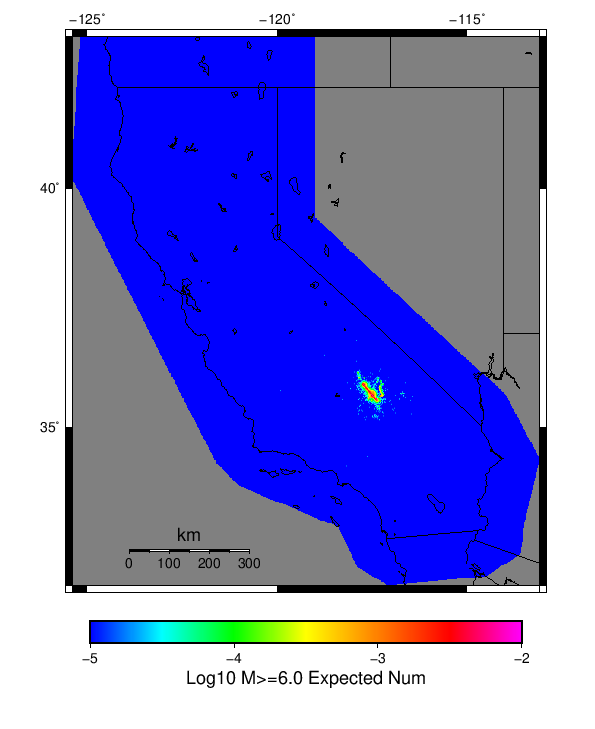 |
| M≥7 |  |  |
{
"numSimulations": 100000,
"duration": 10.0,
"startTimeMillis": 1562987994040,
"includeSpontaneous": false,
"randomSeed": 1562998625418,
"binaryOutput": true,
"binaryOutputFilters": [
{
"prefix": "results_complete",
"descendantsOnly": false
},
{
"prefix": "results_m5_preserve_chain",
"minMag": 5.0,
"preserveChainBelowMag": true,
"descendantsOnly": false
}
],
"forceRecalc": false,
"simulationName": "ComCat M7.1 (ci38457511), 7 Days After, Finite Surface",
"numRetries": 3,
"outputDir": "/home/scec-02/kmilner/ucerf3/etas_sim/2019_07_12-ComCatM7p1_ci38457511_7DaysAfter_FiniteSurface-noSpont-full_td-scale1.14",
"triggerRuptures": [
"omitted due to length, see original input file"
],
"cacheDir": "/home/scec-02/kmilner/ucerf3/ucerf3-etas-launcher/inputs/cache_fm3p1_ba",
"fssFile": "/home/scec-02/kmilner/ucerf3/ucerf3-etas-launcher/inputs/2013_05_10-ucerf3p3-production-10runs_COMPOUND_SOL_FM3_1_SpatSeisU3_MEAN_BRANCH_AVG_SOL.zip",
"probModel": "FULL_TD",
"applySubSeisForSupraNucl": true,
"totRateScaleFactor": 1.14,
"gridSeisCorr": true,
"timeIndependentERF": false,
"griddedOnly": false,
"imposeGR": false,
"includeIndirectTriggering": true,
"gridSeisDiscr": 0.1,
"catalogCompletenessModel": "RELAXED",
"comcatMetadata": {
"region": {
"border": [
{
"latitude": 35.15365355751595,
"longitude": -117.47431647544391
},
{
"latitude": 35.17292919266466,
"longitude": -117.56279622540113
},
{
"latitude": 35.20441365753836,
"longitude": -117.64589681007877
},
{
"latitude": 35.247163831132916,
"longitude": -117.72112153036954
},
{
"latitude": 35.29525064505718,
"longitude": -117.7804655306864
},
{
"latitude": 35.29525064505718,
"longitude": -117.78046553068643
},
{
"latitude": 35.294910012166454,
"longitude": -117.78094941705682
},
{
"latitude": 35.49122688423643,
"longitude": -117.99154900574608
},
{
"latitude": 35.63990795882754,
"longitude": -118.15200662653803
},
{
"latitude": 35.64032426188452,
"longitude": -118.15141718539137
},
{
"latitude": 35.64611607407896,
"longitude": -118.1585963723887
},
{
"latitude": 35.707246203129905,
"longitude": -118.21178506881394
},
{
"latitude": 35.77493510098581,
"longitude": -118.25116955733948
},
{
"latitude": 35.84714014891358,
"longitude": -118.27552506861608
},
{
"latitude": 35.9216767898344,
"longitude": -118.28407317178913
},
{
"latitude": 35.996283744303874,
"longitude": -118.27650995778652
},
{
"latitude": 36.06869125389667,
"longitude": -118.25302056201666
},
{
"latitude": 36.13669034640615,
"longitude": -118.21427895886944
},
{
"latitude": 36.198200994433115,
"longitude": -118.16143237281163
},
{
"latitude": 36.25133698031536,
"longitude": -118.09607016464517
},
{
"latitude": 36.294465299576835,
"longitude": -118.0201776503243
},
{
"latitude": 36.32625804278775,
"longitude": -117.93607596331218
},
{
"latitude": 36.34573489750426,
"longitude": -117.84634973691836
},
{
"latitude": 36.35229470657559,
"longitude": -117.75376500872244
},
{
"latitude": 36.34573489750426,
"longitude": -117.66118028052652
},
{
"latitude": 36.32625804278775,
"longitude": -117.5714540541327
},
{
"latitude": 36.294465299576835,
"longitude": -117.4873523671206
},
{
"latitude": 36.25133698031536,
"longitude": -117.41145985279971
},
{
"latitude": 36.20403058624469,
"longitude": -117.3532685851397
},
{
"latitude": 36.20403058624469,
"longitude": -117.35326858513967
},
{
"latitude": 36.20445309173357,
"longitude": -117.35267036200473
},
{
"latitude": 36.05471080180231,
"longitude": -117.19257652351865
},
{
"latitude": 36.05432119796899,
"longitude": -117.1931289487647
},
{
"latitude": 36.05432119796898,
"longitude": -117.19312894876467
},
{
"latitude": 36.054710801802294,
"longitude": -117.19257652351865
},
{
"latitude": 35.85700467786706,
"longitude": -116.98246531579865
},
{
"latitude": 35.85665904527172,
"longitude": -116.9829563045041
},
{
"latitude": 35.85665904527172,
"longitude": -116.98295630450413
},
{
"latitude": 35.85198246130413,
"longitude": -116.97722835985853
},
{
"latitude": 35.79047422217307,
"longitude": -116.92460894402117
},
{
"latitude": 35.7224770819815,
"longitude": -116.88603138928738
},
{
"latitude": 35.65007083293463,
"longitude": -116.86263844672311
},
{
"latitude": 35.57546429679895,
"longitude": -116.85510183642072
},
{
"latitude": 35.50092718387484,
"longitude": -116.86360664347356
},
{
"latitude": 35.42872083282417,
"longitude": -116.88785102192868
},
{
"latitude": 35.36102995938701,
"longitude": -116.92706056551566
},
{
"latitude": 35.299897420734375,
"longitude": -116.98001629266898
},
{
"latitude": 35.247163831132916,
"longitude": -117.04509488496139
},
{
"latitude": 35.20441365753836,
"longitude": -117.12031960525216
},
{
"latitude": 35.17292919266466,
"longitude": -117.2034201899298
},
{
"latitude": 35.15365355751595,
"longitude": -117.29189993988702
},
{
"latitude": 35.147163632201334,
"longitude": -117.38310820766546
}
]
},
"eventID": "ci38457511",
"minDepth": -10.0,
"maxDepth": 24.0,
"minMag": 2.5,
"startTime": 1562259775360,
"endTime": 1562987993040,
"magComplete": 3.5
}
}